<!doctype html>
<html lang="en">
<head>
  <meta charset="utf-8">
  <meta name="viewport" content="width=device-width, initial-scale=1">
  <title>arxiv digest — 2026-06-11</title>
  <style>
:root {
  --bg: #ffffff;
  --fg: #1f2328;
  --muted: #59636e;
  --border: #d0d7de;
  --card: #f6f8fa;
  --link: #0969da;
}
body {
  max-width: 980px;
  margin: 0 auto;
  padding: 2rem 1rem 5rem;
  font-family: -apple-system, BlinkMacSystemFont, "Segoe UI", Helvetica, Arial, sans-serif;
  line-height: 1.55;
  color: var(--fg);
  background: var(--bg);
}
a { color: var(--link); }
img { max-width: 100%; height: auto; }
pre, code { background: var(--card); border-radius: 6px; }
pre { padding: 1rem; overflow-x: auto; }
blockquote { border-left: 4px solid var(--border); padding-left: 1rem; color: var(--muted); }
details { margin: 0.6rem 0; }
summary { cursor: pointer; font-weight: 600; }
.paper-figures-scroll {
  display: flex;
  gap: 1rem;
  overflow-x: auto;
  overscroll-behavior-x: contain;
  padding: 0.75rem 0.25rem 1rem;
  margin: 1rem 0 1.25rem;
  border-top: 1px solid var(--border);
  border-bottom: 1px solid var(--border);
  scroll-snap-type: x proximity;
}
.paper-figure-card {
  flex: 0 0 min(260px, 72vw);
  scroll-snap-align: start;
  background: var(--card);
  border: 1px solid var(--border);
  border-radius: 12px;
  padding: 0.55rem;
}
.paper-figure-card img {
  display: block;
  width: 100%;
  max-height: 240px;
  object-fit: contain;
  background: white;
  border-radius: 8px;
}
.paper-figure-caption {
  display: block;
  margin-top: 0.5rem;
  color: var(--muted);
  font-size: 0.85rem;
}
.figure-strip-hint {
  color: var(--muted);
  font-size: 0.9rem;
  margin-bottom: -0.3rem;
}
</style>
  <!-- MathJax: renders $...$ inline math and $$...$$ display math, plus
       \(...\) and \[...\]. Loaded from the official CDN; works offline
       once cached. Configured to skip code/pre blocks so arxiv IDs that
       look like dollar amounts don't get mangled. -->
  <script>
    window.MathJax = {
      tex: {
        inlineMath: [['$', '$'], ['\\(', '\\)']],
        displayMath: [['$$', '$$'], ['\\[', '\\]']],
        processEscapes: true,
        processEnvironments: true
      },
      options: {
        skipHtmlTags: ['script', 'noscript', 'style', 'textarea', 'pre', 'code'],
        ignoreHtmlClass: 'tex2jax_ignore',
        processHtmlClass: 'tex2jax_process'
      }
    };
  </script>
  <script id="MathJax-script" async
    src="https://cdn.jsdelivr.net/npm/mathjax@3/es5/tex-chtml.js"></script>
</head>
<body>
<header style="background-color: #333; color: white; padding: 15px; margin-bottom: 20px;">
  <h1 style="margin: 0; font-size: 24px;">
    <a href="https://ochelpan.github.io/arXiv_clean/" style="color: white; text-decoration: none;">Main</a>
  </h1>
</header>

<h1>Daily arXiv Report</h1>

<hr>
<p>
<a href="index.html">← Index</a>
 · <a href="papers_02.html">← Previous</a> · <a href="papers_04.html">Next →</a>
</p>
<hr>

<h2>Papers 41–60</h2>
<p><a id="paper-2606.11644"></a></p>
<h3 id="raw-curve-quantum-fingerprints-a-mahalanobis-authentication-framework-with-drift-early-warning-and-adversarial-detection"><a href="http://arxiv.org/abs/2606.11644v1">Raw-Curve Quantum Fingerprints: A Mahalanobis Authentication Framework with Drift Early Warning and Adversarial Detection</a></h3>
<p><strong>Authors:</strong> Geyuyan Ma, Xiangdong Meng, Yangyang Fei, Zhiqiang Fan, Hanshi Zhao, Chenhui Wang, Haoran Yang, Weilong Wang, Zheng Shan<br>
<strong>Type:</strong> both · <strong>Category:</strong> quantum information and computing · <strong>PDF:</strong> <a href="https://arxiv.org/pdf/2606.11644v1">https://arxiv.org/pdf/2606.11644v1</a><br>
<strong>Analysis basis:</strong> full PDF text, analyzed in chunks
<strong>Topic relevance:</strong> 🔥 <code>QC/QI experiment</code> <strong>4/5</strong> · <code>methods for driven-dissipative</code> <strong>1/5</strong> · <code>quantum measurements</code> <strong>1/5</strong></p>
<div class="figure-strip-hint">↔ Scroll figures horizontally</div>
<div class="paper-figures-scroll">
<figure class="paper-figure-card">
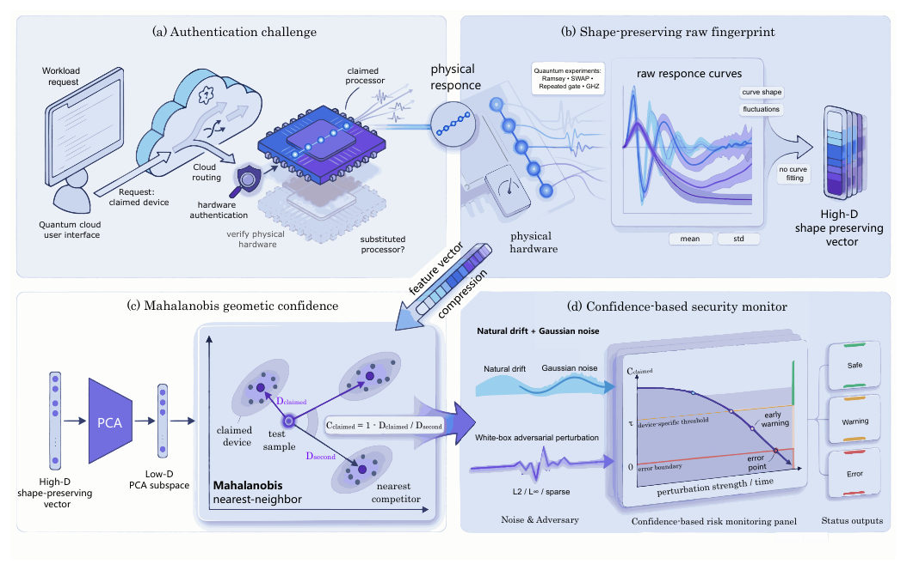
<figcaption class="paper-figure-caption"><b>Fig 1.</b> Fig. 1. Overview of the proposed quantum hardware authentication framework. (a) A cloud user requests a specific quantum processor; without hardware authentication the job may be redirected to a substituted device. The processor is authenticated by actively probing with four quantum experiments. (b) Raw measurement statistics (means and standard deviations) from the four experiments are directly concatenated into a high-dimensional fingerprint vector without curve fitting, preserving subtle device-specific shape features. (c) PCA compresses the high dimensional fingerprint into a low dimensional subspace; a Mahalanobis nearest-neighbor classifier identifies the claimed device and computes...</figcaption>
</figure>
<figure class="paper-figure-card">
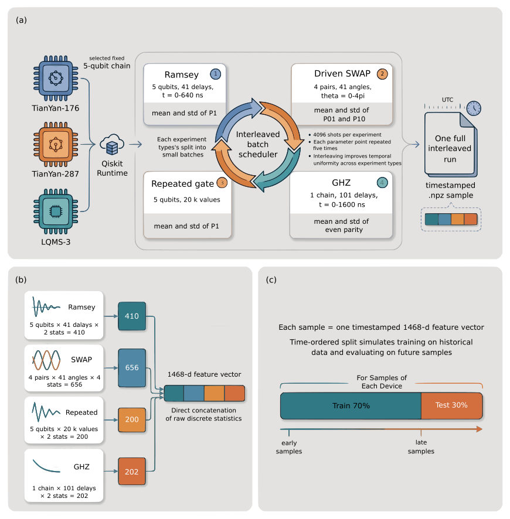
<figcaption class="paper-figure-caption"><b>Fig 2.</b> Fig. 2. Data acquisition and workflow. (a) Four interleaved quantum experiments are executed on a fixed 5-qubit chain. (b) Raw measurement statistics are directly concatenated into a 1468-dimensional feature vector. (c) The dataset is split chronologically (70% train / 30% test).</figcaption>
</figure>
<figure class="paper-figure-card">
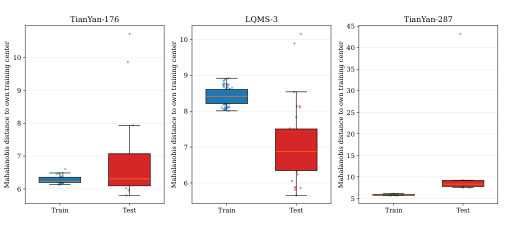
<figcaption class="paper-figure-caption"><b>Fig 3.</b> Fig. 3. Box plots of Mahalanobis distances to the own training centre (blue: training set, red: test set). The central line indicates the median, the box spans the interquartile range (IQR), and the whiskers extend to the farthest data point within 1.5 × IQR. Clear differences between training and test distances confirm natural temporal drift on LQMS-3 and TianYan-287; TianYan-176 exhibits a milder shift.</figcaption>
</figure>
<figure class="paper-figure-card">
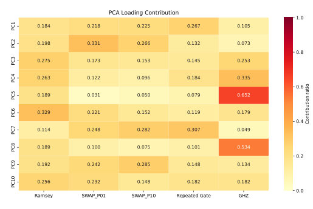
<figcaption class="paper-figure-caption"><b>Fig 4.</b> Fig. 4. Average per-feature contribution of each experiment group to the first ten principal components (row-normalised). Each group contributes to more than one PC, indicating that all four experiments provide distinct variance components.</figcaption>
</figure>
<figure class="paper-figure-card">
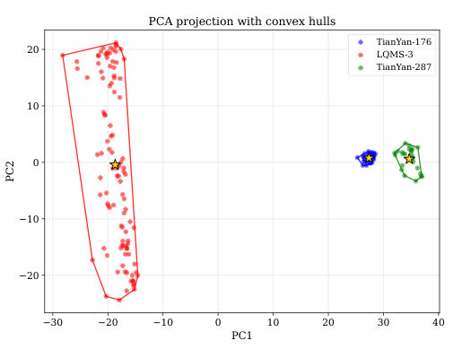
<figcaption class="paper-figure-caption"><b>Fig 5.</b> Fig. 5. PCA projection of all samples onto PC1 and PC2. Solid polygons are convex hulls; star markers denote centroids. LQMS-3 exhibits a wider spread but its centroid is far from the others, yielding high separability.</figcaption>
</figure>
</div>

<p><strong>Summary.</strong> This work introduces a novel authentication framework that uses raw measurement data from multiple interleaved quantum experiments to create high-dimensional 'quantum fingerprints' of superconducting processors. By employing a Mahalanobis nearest-neighbor classifier, it not only verifies the device identity but also provides a confidence score that predicts performance degradation due to environmental noise or malicious attacks. This offers a practical path toward building trustworthy and reliable quantum cloud computing services.</p>
<p><strong>Why it may be interesting.</strong> The methodology directly addresses hardware trustworthiness in quantum computing, providing quantitative metrics ($C_{	ext{claimed}}$) to monitor device health proactively, which is crucial for deploying complex quantum algorithms.</p>
<details>
<summary>Detailed structure</summary>
<p><strong>Main problem.</strong> The lack of transparency in quantum cloud platforms enables hardware substitution attacks, compromising computational integrity.</p>
<p><strong>Main result.</strong> The proposed framework achieves 100% benign authentication accuracy and provides a quantifiable confidence score ($C_{	ext{claimed}}$) that predicts device degradation due to noise or adversarial manipulation.</p>
<p><strong>Method.</strong> It constructs high-dimensional quantum fingerprints from raw measurement statistics using a Mahalanobis nearest-neighbor classifier (MNN).</p>
<p><strong>Model / system.</strong> The system involves superconducting quantum processors (e.g., TianYan, LQMS) tested on fixed chains of five qubits across four complementary interleaved experiments.</p>
<p><strong>Key observables.</strong> Authentication Confidence ($C_{	ext{claimed}}$), Mahalanobis distance, raw measurement statistics (means and standard deviations).</p>
<p><strong>Important parameters / regimes.</strong> Noise strength ($\sigma$), perturbation strength ($\epsilon$), feature dimensionality (up to 1468-d).</p>
<p><strong>Assumptions / limitations.</strong> The framework assumes a closed-set environment for authentication; theoretical analysis relies on additive isotropic Gaussian noise.</p>
<p><strong>Figures summary.</strong> Figures illustrate the workflow from raw data acquisition to high-dimensional embedding, showing confidence decay curves under increasing noise ($\sigma$) and detection rates against various adversarial attacks.</p>
<p><strong>Paper structure.</strong> The paper progresses by first establishing the fingerprinting method (raw statistics $
ightarrow$ high-D vector), then applying MNN for authentication, followed by rigorous testing of drift monitoring using $C_{	ext{claimed}}$ under Gaussian noise, and finally evaluating robustness against white-box adversarial attacks.</p>
</details>
<details>
<summary>Abstract</summary>
<p>Quantum cloud platforms are poised to deliver powerful computing capabilities, but users have no direct means to verify which physical device executes their workload. This lack of transparency enables hardware substitution attacks, where a malicious adversary could redirect a job to a substituted or inferior processor. We present a general authentication framework that addresses this problem by constructing multi-dimensional quantum fingerprints from raw measurement data. Without any curve fitting, we directly concatenate the raw statistics of complementary experiments into a high-dimensional feature vector that preserves subtle device-specific information. A Mahalanobis nearest-neighbor classifier achieves 100\% benign authentication accuracy on three superconducting processors over a three-week chronological split. The classifier naturally yields an authentication confidence $C_{\mathrm{claimed}}$ which reveals device-specific safety margins and motivates per-device alert thresholds. We assess the framework's robustness under two distinct scenarios. Under additive isotropic Gaussian noise, $C_{\mathrm{claimed}}$ decays predictably at a rate explained by inverse covariance traces, enabling an early warning mechanism. Against white-box adversarial perturbations, the same confidence threshold detects $L_2$ targeted attacks with near-perfect success and reveals device-dependent empirical thresholds for $L_\infty$ attacks, while untargeted and sparse attacks are ineffective. The proposed framework thus unifies fingerprint extraction, drift-resilient authentication, proactive health monitoring, and adversarial defense, offering a practical step toward trustworthy quantum cloud computing.</p>
</details>
<p><sub><a href="#top">↑ back to top</a></sub></p>

<p><a id="paper-2606.11978"></a></p>
<h3 id="the-kondo-effect-in-ferromagnetic-quantum-critical-cerhmath377mathgemath378math"><a href="http://arxiv.org/abs/2606.11978v1">The Kondo effect in ferromagnetic quantum critical CeRh$_6$Ge$_4$</a></h3>
<p><strong>Authors:</strong> Martin Sundermann, Joe D. Thompson, Eric D. Bauer, Chun Fu Chang, Sheng-Huai Chen, Chang-Yang Kuo, Liu Hao Tjeng, Getrud Zwicknagl, Andrea Severing<br>
<strong>Type:</strong> both · <strong>Category:</strong> strongly correlated electrons · <strong>PDF:</strong> <a href="https://arxiv.org/pdf/2606.11978v1">https://arxiv.org/pdf/2606.11978v1</a><br>
<strong>Analysis basis:</strong> full PDF text, analyzed in chunks
<strong>Topic relevance:</strong> 🔥 <code>Kondo &amp; dissipative impurity</code> <strong>4/5</strong> · <code>Keldysh / 2PI / non-Gaussian methods</code> <strong>1/5</strong> · <code>spintronics-quantum-optics interface</code> <strong>1/5</strong></p>
<div class="figure-strip-hint">↔ Scroll figures horizontally</div>
<div class="paper-figures-scroll">
<figure class="paper-figure-card">
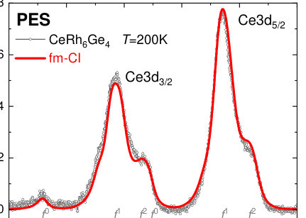
<figcaption class="paper-figure-caption"><b>Fig 1.</b> FIG. 1. Ce 3d core level PES data of CeRh6Ge4 (black circles) after background correction, plus the result of a full-multiplet configuration-interaction (FM-CI) simulation (red line). The gray ruler at the bottom indicates the energy positions of the I(fn) spectral weights.</figcaption>
</figure>
<figure class="paper-figure-card">
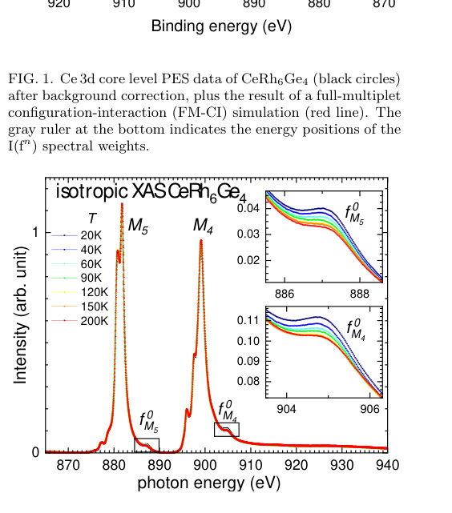
<figcaption class="paper-figure-caption"><b>Fig 2.</b> FIG. 2. Isotropic XAS spectra, Iiso = 1/3·(I(E ∥c) + 2·I(E ⊥c)), of CeRh6Ge4 at the Ce M 4,5 edges for several temperatures T between 20 and 200 K. Insets: enlarged view of 4f 0 satellites at the high energy tail of the M 5 and M 4 edges.</figcaption>
</figure>
<figure class="paper-figure-card">
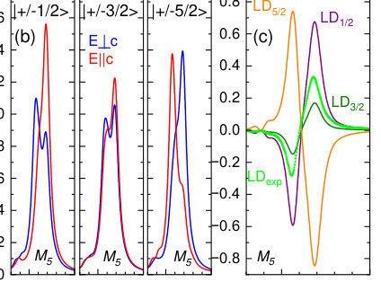
<figcaption class="paper-figure-caption"><b>Fig 3.</b> FIG. 3. (a) Linear polarized XAS spectra, I(E ∥c) (red) and I(E ⊥c) (blue), of CeRh6Ge4 at the Ce M 4,5 edges at T = 20K and the corresponding linear dichroism LDexp = I(E ∥c) - I(E ⊥c) (green). (b) Simulated linear po- larized XAS spectra of pure |±jz⟩states. (c) Simulated linear dichroism of pure |±jz⟩states, LDjz, compared to experimen- tal LDexp (green dotted curve taken from (a)).</figcaption>
</figure>
<figure class="paper-figure-card">
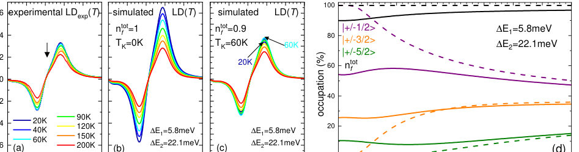
<figcaption class="paper-figure-caption"><b>Fig 4.</b> FIG. 4. (a) Temperature dependence of the experimental linear dichroism, LDexp(T). (b) Simulated LD(T) based on thermal occupation of states using the CEF model as described in the text, corresponding to TK = 0 K and ntot f (T) = 1. (c) Simulated LD(T) taking into account the Kondo effect in addition to thermal occupation of states, see text. (d) Occupation of states as function of temperature for pure thermal occupation (dashed lines) and in the presence of the Kondo effect with TK = 60 K and ntot f (T=0) = 0.9 (solid lines). The black lines are the total occupation ntot f (T) of the 4f shell with (solid) and without (dashed) Kondo effect. In the T = 0 K limit, 35% of the 4f shell...</figcaption>
</figure>
<figure class="paper-figure-card">
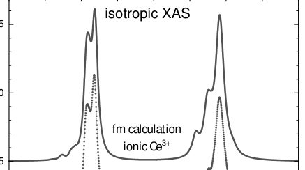
<figcaption class="paper-figure-caption"><b>Fig 5.</b> FIG. 5. Isotropic XAS spectra at the Ce M 4,5 edges of CeRh6Ge4 at 200 K constructed from linear polarized data based on Eq. 1 and full-multiplet (fm) calculation for Ce3+</figcaption>
</figure>
</div>

<p><strong>Summary.</strong> This paper investigates the electronic structure of the heavy fermion ferromagnet CeRh6Ge4 near a quantum critical point. By analyzing X-ray absorption spectroscopy and photoelectron data, the authors demonstrate that simple models fail to explain temperature dependence. They successfully model the results by incorporating the Kondo effect into a multiorbital ground state description, highlighting orbital-dependent correlations as key to understanding its magnetic criticality.</p>
<p><strong>Why it may be interesting.</strong> This work provides a detailed spectroscopic pathway to map out the complex many-body physics governing quantum criticality in heavy fermion systems, directly linking measurable optical properties (dichroism) to fundamental correlated parameters like $T_K$.</p>
<details>
<summary>Detailed structure</summary>
<p><strong>Main problem.</strong> The study aims to understand the mechanism behind a pressure-induced quantum critical point (QCP) in the heavy fermion ferromagnet CeRh6Ge4, focusing on the interplay between localized and itinerant 4f electron character.</p>
<p><strong>Main result.</strong> The experimental data are best explained by incorporating the Kondo effect into a multiorbital ground state model, suggesting an orbital-dependent hybridization mechanism is crucial for describing the low-temperature magnetic behavior.</p>
<p><strong>Method.</strong> The research combines advanced spectroscopic measurements (PES and XAS) with theoretical modeling using full-multiplet configuration interaction (fm-CI) and simplified Anderson Impurity Models (SIAM/NCA).</p>
<p><strong>Model / system.</strong> The system is the heavy fermion ferromagnet CeRh6Ge4, which exhibits complex magnetic ordering influenced by strong electron correlations. The model treats the hybridization of Ce 4f states with conduction electrons within a multi-orbital framework.</p>
<p><strong>Key observables.</strong> Temperature dependence of linear dichroism (LD), spectral weights in XAS/PES satellites, and the derived Kondo temperature (T_K).</p>
<p><strong>Important parameters / regimes.</strong> The critical pressure ($p_c = 0.8 	ext{ GPa}$), the effective $4f$ occupancy ($n_f \sim 0.9$), and the Kondo coupling strength ($T_K \sim 60 	ext{ K}$).</p>
<p><strong>Assumptions / limitations.</strong> The analysis relies on approximations such as the Non-Crossing Approximation (NCA) for the SIAM, and assumes specific symmetries or constraints when fitting spectroscopic data.</p>
<p><strong>Figures summary.</strong> Figures illustrate the temperature dependence of experimental LD versus theoretical predictions derived from both simple thermal occupation models and more complex Kondo-affected multiorbital calculations.</p>
<p><strong>Paper structure.</strong> The paper progresses by first establishing evidence for $4f$ hybridization via PES/XAS, then using linear dichroism measurements to constrain a CEF model, and finally employing the SIAM/NCA framework to incorporate the temperature-dependent Kondo screening effect into the ground state description.</p>
</details>
<details>
<summary>Abstract</summary>
<p>The mechanism of a pressure-induced quantum critical point in the heavy fermion ferromagnet CeRh$_6$Ge$_4$ has attracted interest, as ferromagnetic quantum criticality in a clean itinerant Ce compound is typically avoided. The localized versus itinerant character of the 4\textit{f} electrons is a key aspect for understanding this behavior. We investigated the electronic structure of the 4\textit{f} shell in CeRh$_6$Ge$_4$ using core-level photoelectron and x-ray absorption spectroscopy, demonstrating the hybridization of Ce 4\textit{f} with the conduction electrons. Linearly polarized x-ray absorption reveals a temperature-dependent linear dichroism consistent with the crystal-electric-field (CEF) sequence as inferred from the static susceptibility. This dichroism cannot be described by an ionic full-multiplet model alone, but is reproduced by including the Kondo effect within a single-impurity Anderson model in the non crossing approximation (SIAM/NCA). The Kondo effect mixes higher lying crystal-field states into a resulting multiorbital ground state with 4\textit{f} occupancy \textit{n}$_f$\,$\sim$\,0.9. Deviations at low temperatures between the measured linear dichroism and calculated dichroism suggest an orbital-dependent Kondo effect. A scenario in which there is a multiorbital ground state and orbital-dependent Kondo hybridization should be a starting point for a model of pressure-induced criticality in CeRh$_6$Ge$_4$.</p>
</details>
<p><sub><a href="#top">↑ back to top</a></sub></p>

<p><a id="paper-2606.11485"></a></p>
<h3 id="a-cryogenic-uniaxial-strain-cell-for-quantum-devices"><a href="http://arxiv.org/abs/2606.11485v1">A Cryogenic Uniaxial Strain Cell for Quantum Devices</a></h3>
<p><strong>Authors:</strong> Bradley Lloyd, Davis Rash, Chandler Wilburn, Paul Kliewer, Meenakshi Singh<br>
<strong>Type:</strong> experiment · <strong>Category:</strong> quantum information and computing · <strong>PDF:</strong> <a href="https://arxiv.org/pdf/2606.11485v1">https://arxiv.org/pdf/2606.11485v1</a><br>
<strong>Analysis basis:</strong> full PDF text, analyzed in chunks
<strong>Topic relevance:</strong> 🔥 <code>QC/QI experiment</code> <strong>4/5</strong></p>
<div class="figure-strip-hint">↔ Scroll figures horizontally</div>
<div class="paper-figures-scroll">
<figure class="paper-figure-card">
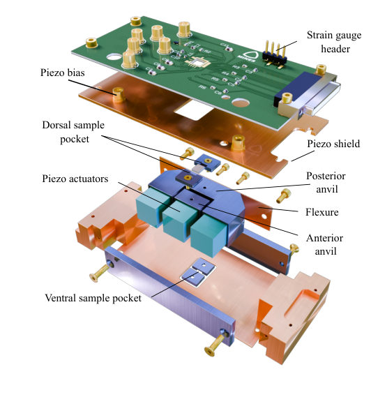
<figcaption class="paper-figure-caption"><b>Fig 1.</b> Figure 1. Exploded overview of the strain cell design.</figcaption>
</figure>
<figure class="paper-figure-card">
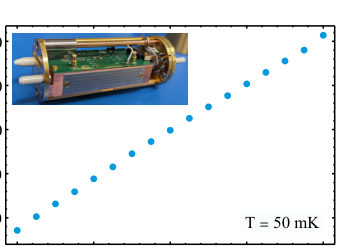
<figcaption class="paper-figure-caption"><b>Fig 2.</b> Figure 2. Strain measured by the change in resistance of a 1.5 × 1.0 mm2 strain gauge epoxied to the center of the dorsal sample, showing a linear relationship between strain and voltage applied to the piezo stacks. Inset: assembled strain cell mounted to the dilution refrigerator puck.</figcaption>
</figure>
<figure class="paper-figure-card">
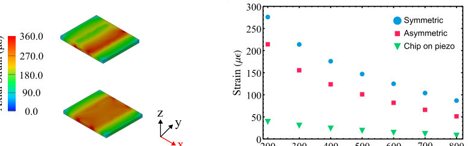
<figcaption class="paper-figure-caption"><b>Fig 3.</b> Figure 3. Finite element analysis of axial strain (εxx) (a) Three-dimensional strain map of the dorsal silicon die under 200 V differential piezo bias at 50 mK, showing the distribution of axial strain across the chip surface for the asymmetrically loaded (top) and symmetrically loaded (bottom) cases. (b) Axial strain at the center of the 1×1 mm² region of interest as a function of substrate thickness for three mounting configurations: symmetric dual-chip loading (circles), asymmetric single-chip loading (squares), and chip epoxied directly to the actuator face (triangles). The symmetric configuration delivers superior strain homogeneity and maintains appreciable center strain even at...</figcaption>
</figure>
</div>

<p><strong>Summary.</strong> The paper introduces a novel cryogenic uniaxial strain cell specifically engineered to apply uniform mechanical strain to thick, square semiconductor chips. This design overcomes limitations of prior cells by integrating high-density electrical wiring and using advanced shielding techniques. It provides a critical tool for experimentally tuning quantum device properties via controlled strain at low temperatures.</p>
<p><strong>Why it may be interesting.</strong> This work provides essential hardware infrastructure for realizing quantum devices whose properties are tunable by mechanical strain, which is crucial for many solid-state qubit platforms.</p>
<details>
<summary>Detailed structure</summary>
<p><strong>Main problem.</strong> Existing piezoelectric strain cells are unsuitable for thick, square-profile semiconductor quantum devices, and integrating dense wiring while maintaining electrical isolation is challenging.</p>
<p><strong>Main result.</strong> The authors designed a novel cryogenic uniaxial strain cell that homogeneously strains thick silicon dies while successfully incorporating high-density RF/DC interconnects and using Faraday cages for electrical isolation.</p>
<p><strong>Method.</strong> The design utilizes a highly symmetric dual-chip loading configuration with a three-stack actuation scheme, validated by finite element simulations and experimental measurement on a 200 $\mu$m thick silicon die.</p>
<p><strong>Model / system.</strong> The platform is a cryogenic uniaxial strain cell operating in a dilution refrigerator, designed to apply controlled mechanical strain to semiconductor quantum devices (e.g., Si qubits). The system incorporates complex electrical shielding and mounting structures.</p>
<p><strong>Key observables.</strong> Applied uniaxial strain ($ ext{215 } \mu\epsilon$ for $200 	ext{V}$ bias), strain homogeneity ($\Delta$), and the ability to support dense RF/DC wiring under strain.</p>
<p><strong>Important parameters / regimes.</strong> Cryogenic temperatures (down to 50 mK), applied voltage ($\pm 200 	ext{V}$), substrate thickness ($200 \mu	ext{m}$).</p>
<p><strong>Assumptions / limitations.</strong> The symmetric mounting configuration effectively suppresses flexural deformation and shear stress, and the Faraday cage successfully prevents unwanted Stark shifts.</p>
<p><strong>Figures summary.</strong> Figure 1 provides an exploded overview of the strain cell design components. Figure 2 details measurements validating the setup's performance at cryogenic temperatures.</p>
<p><strong>Paper structure.</strong> The paper first identifies limitations in current strain cells, then introduces the novel symmetric dual-chip loading design and electrical integration strategy. It presents simulation results confirming homogeneity improvements before concluding with experimental validation on a silicon die.</p>
</details>
<details>
<summary>Abstract</summary>
<p>Mechanical strain is a powerful resource for tuning quantum systems, but existing piezoelectric strain cells are generally optimized for fragile, high-aspect-ratio single crystals rather than the thick, square-profile chips typical of semiconductor quantum devices. Furthermore, adapting these cells for qubits requires accommodating dense RF and DC wiring while maintaining strict electrical isolation from high-voltage piezo actuators. Here, we present a piezoelectric uniaxial strain cell designed to homogeneously strain thick, square-profile substrates. We introduce a highly symmetric dual-chip loading configuration that effectively suppresses flexural deformation and shear stress. The cell integrates a high-density RF/DC interposer to support standard wire bonding and encloses the actuators in a grounded Faraday cage to prevent unwanted Stark shifts in the device layer. Finite element simulations confirm that combining stiff actuators with this symmetric mounting drastically improves strain homogeneity. Finally, we validate the apparatus experimentally by applying uniaxial strain to a 200 $μ$m thick silicon die. Surface strain measurements demonstrate an applied strain of 215 $με$ for 200 V applied piezo bias.</p>
</details>
<p><sub><a href="#top">↑ back to top</a></sub></p>

<p><a id="paper-2606.11580"></a></p>
<h3 id="superspace-concentration-and-adversarial-robustness-in-quantum-algorithms"><a href="http://arxiv.org/abs/2606.11580v1">Superspace Concentration and Adversarial Robustness in Quantum Algorithms</a></h3>
<p><strong>Authors:</strong> Eric Yocam, Christian Yocam, Varghese Vaidyan, Yong Wang, Mahesh Kalappattil, Anthony Rizi<br>
<strong>Type:</strong> theory · <strong>Category:</strong> quantum information and computing · <strong>PDF:</strong> <a href="https://arxiv.org/pdf/2606.11580v1">https://arxiv.org/pdf/2606.11580v1</a><br>
<strong>Analysis basis:</strong> full PDF text, analyzed in chunks
<strong>Topic relevance:</strong> <code>entanglement &amp; information structure</code> <strong>3/5</strong> · <code>methods for driven-dissipative</code> <strong>3/5</strong> · <code>correlated / nonlocal dissipation</code> <strong>2/5</strong> · <code>driven-dissipative phase transition</code> <strong>2/5</strong> · <code>Keldysh / 2PI / non-Gaussian methods</code> <strong>1/5</strong> · <code>non-equilibrium dynamics</code> <strong>1/5</strong> · <code>non-equilibrium universality</code> <strong>1/5</strong></p>
<div class="figure-strip-hint">↔ Scroll figures horizontally</div>
<div class="paper-figures-scroll">
<figure class="paper-figure-card">
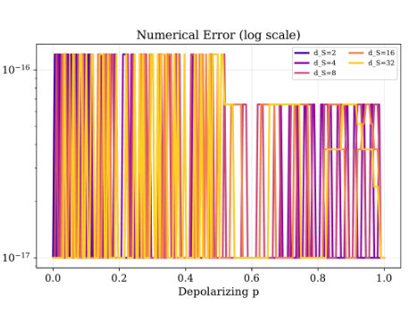
<figcaption class="paper-figure-caption"><b>Fig 1.</b> Figure 1: Decoherence degradation of focus for dS ∈{2, 4, 8, 16, 32}.</figcaption>
</figure>
<figure class="paper-figure-card">
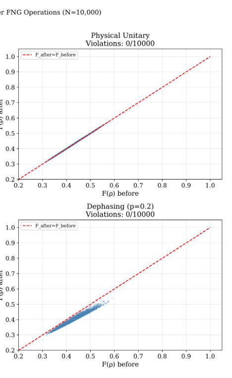
<figcaption class="paper-figure-caption"><b>Fig 2.</b> Figure 2: Focus before vs. after four FNG channels, N = 10,000 states.</figcaption>
</figure>
<figure class="paper-figure-card">
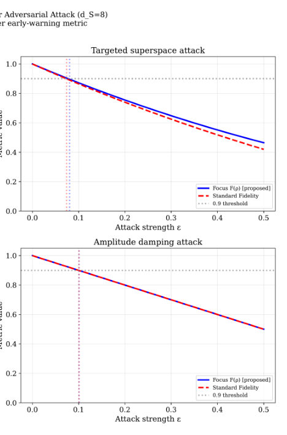
<figcaption class="paper-figure-caption"><b>Fig 3.</b> Figure 3: Focus and fidelity under four adversarial attacks (dS = 8).</figcaption>
</figure>
<figure class="paper-figure-card">
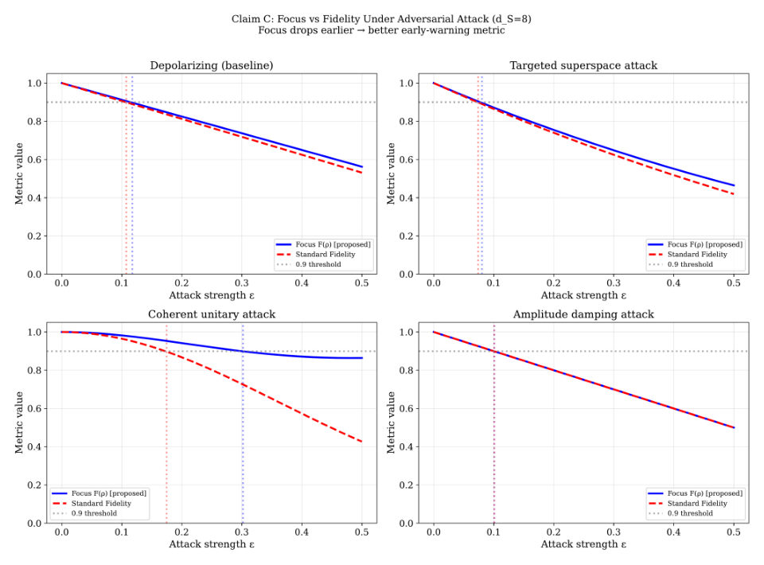
<figcaption class="paper-figure-caption"><b>Fig 4.</b> Fig. 4 shows F(ρk) and P(marked) as functions of Grover iteration k for n ∈{3, 4, 5, 6, 7} qubit registers up to the optimal iteration k∗= ⌊π √</figcaption>
</figure>
<figure class="paper-figure-card">
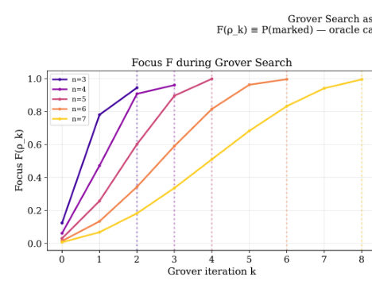
<figcaption class="paper-figure-caption"><b>Fig 5.</b> Figure 4: Focus F(ρk) and success probability during Grover search, n = 3–7 qubits.</figcaption>
</figure>
</div>

<p><strong>Summary.</strong> This paper introduces 'superspace concentration' as a novel resource measure quantifying how well quantum information can be concentrated in a preferred subspace. It rigorously proves its properties and demonstrates that this focus measure offers superior resilience against adversarial attacks compared to standard fidelity metrics. The work provides a powerful, theoretically grounded tool for assessing the security and capacity of quantum protocols.</p>
<p><strong>Why it may be interesting.</strong> For AMO physicists studying open quantum systems, this work provides a new, quantifiable metric ($F(
ho)$) that detects structural information loss beyond simple entanglement or coherence measures when the system is subjected to structured noise or targeted attacks.</p>
<details>
<summary>Detailed structure</summary>
<p><strong>Main problem.</strong> The paper develops a resource-theoretic framework around 'superspace concentration' ($F(
ho)$) to quantify quantum resources, particularly for understanding adversarial robustness and algorithmic complexity.</p>
<p><strong>Main result.</strong> Focus ($F(
ho)$) was shown to be operationally distinct from other measures like U(dS)-asymmetry, providing superior resilience against coherent unitary attacks, and its capacity gap scales as $\log_2(d_S)$.</p>
<p><strong>Method.</strong> The authors use resource theory axioms (monotonicity, etc.) combined with GPU-accelerated numerical simulations to test the behavior of $F(
ho)$ under various noise channels and adversarial perturbations.</p>
<p><strong>Model / system.</strong> The system involves a composite Hilbert space $H = H_{	ext{phys}} \otimes H_{	ext{super}}$, where the focus measure is derived from the largest eigenvalue ($\lambda_{\max}$) of the reduced density matrix $
ho_{    ext{super}}$ over an extended superspace.</p>
<p><strong>Key observables.</strong> Focus Measure ($F(
ho) = \lambda_{\max}(
ho_{	ext{super}})$), Focus Capacity Gap ($\Delta F$), and comparison against standard fidelity.</p>
<p><strong>Important parameters / regimes.</strong> Superspace dimension $d_S$, attack strength $\epsilon$, noise parameters $p$ (for depolarizing channels).</p>
<p><strong>Assumptions / limitations.</strong> The framework relies on identifying 'Focus-Non-Generating' (FNG) operations, and capacity gap analysis is currently limited to product and correlated noise channels.</p>
<p><strong>Figures summary.</strong> Figures illustrate the superior robustness of Focus over fidelity under adversarial attacks, confirm the $\log_2(d_S)$ scaling law for the capacity gap, and map out monotonicity violations across various system configurations.</p>
<p><strong>Paper structure.</strong> The paper establishes the mathematical definition of $F(
ho)$, proves its resource-theoretic properties (monotonicity), demonstrates its operational superiority over other measures in adversarial settings, connects it to algorithmic complexity (Grover's algorithm), and numerically characterizes the capacity gap scaling law.</p>
</details>
<details>
<summary>Abstract</summary>
<p>We study superspace concentration as a quantum resource, formalized through the focus measure F(\r{ho}) = λ_max(\r{ho}_super) - the largest eigenvalue of the reduced superspace state - which quantifies the capacity of a quantum system to concentrate informational weight into a preferred subspace of an extended degree-of-freedom space. We develop a complete resource-theoretic framework around this measure and validate its properties through GPU-accelerated numerical simulation. Analytic decoherence predictions are confirmed to machine precision (1.11 x 10^{-16}) for superspace dimensions dS in {2,4,8,16,32}. Focus monotonicity holds across 10,000 random states with zero violations under four focus-non-generating channels across six system configurations. Focused quantum states resist coherent unitary attacks with significantly greater resilience than standard fidelity predicts, with focus remaining above 0.9 at attack strength ε = 0.302 versus ε = 0.174 for fidelity. We further demonstrate that the focus measure and the U(dS)-asymmetry measure are operationally distinct: asymmetry remains near zero and provides no robustness signal under coherent and targeted attacks while focus tracks spectral concentration and remains robust until ε &gt; 0.3. The connection between Grover's algorithm and superspace concentration is made explicit via the identity F(|ψ_k&gt;&lt;ψ_k|) = P(marked), providing a resource-theoretic interpretation of oracle query complexity. Finally, we provide the first numerical characterization of the focus capacity gap ΔF, identifying a log_2(dS) scaling law confirmed for both product and correlated noise channels.</p>
</details>
<p><sub><a href="#top">↑ back to top</a></sub></p>

<p><a id="paper-2606.12367"></a></p>
<h3 id="nonadditivity-in-quantum-field-theory-replica-energies-scaling-filters-and-the-renormalization-group"><a href="http://arxiv.org/abs/2606.12367v1">Nonadditivity in Quantum Field Theory: Replica Energies, Scaling Filters, and the Renormalization Group</a></h3>
<p><strong>Authors:</strong> Giacomo Santoni, Francesco Scardino<br>
<strong>Type:</strong> theory · <strong>Category:</strong> statistical mechanics · <strong>PDF:</strong> <a href="https://arxiv.org/pdf/2606.12367v1">https://arxiv.org/pdf/2606.12367v1</a><br>
<strong>Analysis basis:</strong> full PDF text, analyzed in chunks
<strong>Topic relevance:</strong> <code>Keldysh / 2PI / non-Gaussian methods</code> <strong>3/5</strong> · <code>non-equilibrium universality</code> <strong>2/5</strong> · <code>analog quantum simulation</code> <strong>1/5</strong> · <code>correlated / nonlocal dissipation</code> <strong>1/5</strong> · <code>correlated cavity matter</code> <strong>1/5</strong> · <code>driven-dissipative phase transition</code> <strong>1/5</strong> · <code>entanglement &amp; information structure</code> <strong>1/5</strong> · <code>methods for driven-dissipative</code> <strong>1/5</strong> · <code>non-equilibrium dynamics</code> <strong>1/5</strong></p>
<div class="figure-strip-hint">↔ Scroll figures horizontally</div>
<div class="paper-figures-scroll">
<figure class="paper-figure-card">
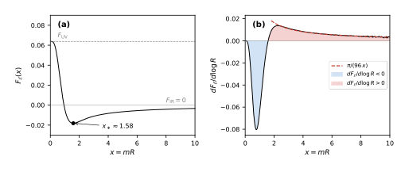
<figcaption class="paper-figure-caption"><b>Fig 1.</b> FIG. 1: (a) Thermodynamic F-function FE(x) for a free massive scalar on S3 (x = mR). FE starts at FUV ≈0.064 (dashed line), overshoots below FIR = 0, reaching a minimum at x∗≈1.58 (dot), then returns to 0−from below. (b) Flow derivative dFE/d log R. Negative for x &lt; x∗, positive for x &gt; x∗(shaded regions). The dashed curve on the top right corner is the analytic asymptotic π/(96 x) in Eq. (107), which controls the large-x tail. The sign change demonstrates that FE is not a monotone F-function.</figcaption>
</figure>
</div>

<p><strong>Summary.</strong> This work develops the concept of 'replica energy' as a universal thermodynamic diagnostic tool to quantify deviations from ideal additivity in Quantum Field Theory. By applying specific differential filtering operators tailored to different dimensions, the authors successfully extract fundamental physical constants like central charges and anomaly coefficients from finite-size effects. It provides a rigorous mathematical language for understanding nonextensive behavior across various quantum systems.</p>
<p><strong>Why it may be interesting.</strong> The systematic application of scaling filters provides a powerful, unified diagnostic tool for theoretical physicists studying critical phenomena or topological phases where simple extensivity assumptions break down.</p>
<details>
<summary>Detailed structure</summary>
<p><strong>Main problem.</strong> The paper investigates nonadditivity and deviations from simple scaling laws (extensivity) in Quantum Field Theory, aiming to bridge concepts between statistical mechanics and QFT.</p>
<p><strong>Main result.</strong> The replica energy provides a unified thermodynamic language for diagnosing additivity violations, defect-free energies, and renormalization group irreversibility across different dimensions.</p>
<p><strong>Method.</strong> The core method involves applying specialized differential filters (e.g., $\left(1 - rac{1}{L}\partial_L
ight)$) to the logarithm of the partition function ($\log Z$) to systematically remove leading bulk contributions and isolate universal, nonadditive corrections.</p>
<p><strong>Model / system.</strong> The analysis applies to general thermodynamic systems, finite-volume QFTs (e.g., on spheres $S^3$ or $S^4$), topologically ordered gapped phases (Chern–Simons theory), and fracton models in various dimensions ($d=2, 3, 4$).</p>
<p><strong>Key observables.</strong> Replica Energy ($eta E$), Sphere Free Energy ($F_E(R)$), Euler Anomaly Coefficient ($a$), Central Charge ($c$), and the dimension of the topological Hilbert space ($\dim H(\Sigma)$).</p>
<p><strong>Important parameters / regimes.</strong> System size $L$, temperature $eta^{-1}$, spatial dimensions $d=2, 3, 4$, and correlation lengths $\xi$.</p>
<p><strong>Assumptions / limitations.</strong> The analysis relies on asymptotic factorization of the partition function and specific definitions of filtering operators designed to project out different types of scaling behavior.</p>
<p><strong>Figures summary.</strong> Figures illustrate how the replica energy functional changes its dependence on size $R$ or $L$ across dimensions, showing distinct behaviors for finite-size corrections versus topological contributions.</p>
<p><strong>Paper structure.</strong> The paper develops a general framework using replica energies to diagnose nonadditivity. It then applies this framework dimension by dimension ($d=2, 3, 4$) to extract universal constants like $c$ and $a$, comparing the mathematical structure of the filters required in each case.</p>
</details>
<details>
<summary>Abstract</summary>
<p>Extensive systems have a simple thermodynamic signature: the logarithm of the partition function scales homogeneously with the size of the system. We show that the failure of this scaling, measured by the replica energy ${\cal E}$, provides a useful bridge between statistical mechanics and quantum field theory. The associated differential operator $(1-\frac1d L\partial_L)$ removes the leading bulk contribution to $W=\log Z$ and isolates the part that is sensitive to boundaries, topology, defects, long-range forces, or other sources of nonadditivity. In quantum field theory this thermodynamic idea has two closely related uses. For ordinary finite-volume or spherical partition functions, suitable higher-order versions of the same filter remove local counterterms and extract universal fixed-point data such as the central charge, the sphere free energy $F$, and the Euler anomaly coefficient $a$. For replica geometries with entangling defects, the same filtering principle gives the renormalized defect free energy. In $2+1$ dimensions, its $n\to1$ limit is precisely the entropic $F$-function. We use this perspective to distinguish ordinary finite-size corrections, topology-dependent constants in gapped phases, subextensive fracton degeneracies, and genuinely nonextensive systems with long-range interactions such as self-gravitating thermal matter. Replica energy therefore offers a common thermodynamic language for additivity, defect free energies, and renormalization-group irreversibility.</p>
</details>
<p><sub><a href="#top">↑ back to top</a></sub></p>

<p><a id="paper-2606.11306"></a></p>
<h3 id="implementing-hamiltonian-renormalization-group-flow-on-quantum-computers-with-vapor"><a href="http://arxiv.org/abs/2606.11306v1">Implementing Hamiltonian Renormalization Group Flow on Quantum Computers with VAPOR</a></h3>
<p><strong>Authors:</strong> Federica Fragomeno, Jorden Roberts, Saeed Rastgoo, Klaus Liegener<br>
<strong>Type:</strong> both · <strong>Category:</strong> quantum information and computing · <strong>PDF:</strong> <a href="https://arxiv.org/pdf/2606.11306v1">https://arxiv.org/pdf/2606.11306v1</a><br>
<strong>Analysis basis:</strong> full PDF text, analyzed in chunks
<strong>Topic relevance:</strong> <code>analog quantum simulation</code> <strong>3/5</strong> · <code>QC/QI experiment</code> <strong>2/5</strong> · <code>Keldysh / 2PI / non-Gaussian methods</code> <strong>1/5</strong> · <code>driven-dissipative phase transition</code> <strong>1/5</strong> · <code>entanglement &amp; information structure</code> <strong>1/5</strong> · <code>exotic spin models in light-matter</code> <strong>1/5</strong> · <code>methods for driven-dissipative</code> <strong>1/5</strong> · <code>non-equilibrium dynamics</code> <strong>1/5</strong></p>
<div class="figure-strip-hint">↔ Scroll figures horizontally</div>
<div class="paper-figures-scroll">
<figure class="paper-figure-card">
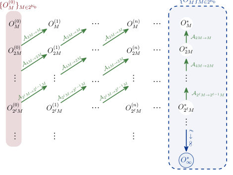
<figcaption class="paper-figure-caption"><b>Fig 1.</b> FIG. 1: Operator families (columns) across different resolutions M converge under the RG flow AM→M ′ to a fixed-point family {O∗ M}M which allows a continuum limit O∗ ∞(right).</figcaption>
</figure>
<figure class="paper-figure-card">
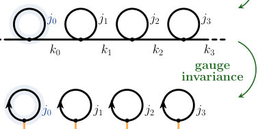
<figcaption class="paper-figure-caption"><b>Fig 2.</b> FIG. 2: (a) Toy model based on a 2D lattice with vertical translational invariance: the irrep label ji applies across all vertical edges. (b) Symmetry restriction reduces the system to a 1D chain with one representative per vertical edge set. (c) The gauge-invariant basis is spanned by intertwiners (πi, orange) coupling local irreps at each vertex.</figcaption>
</figure>
<figure class="paper-figure-card">
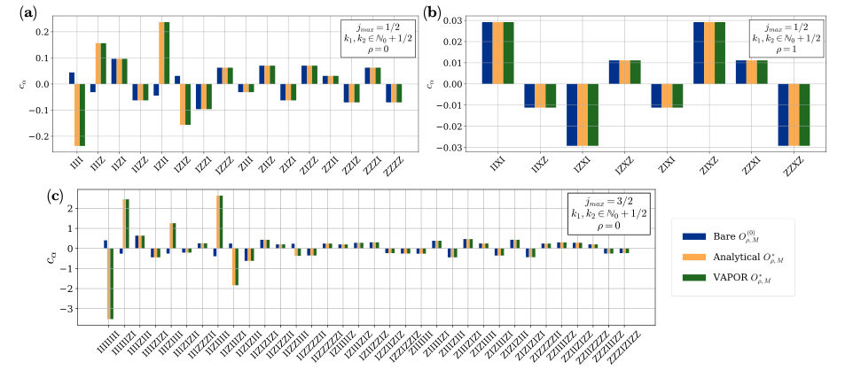
<figcaption class="paper-figure-caption"><b>Fig 3.</b> FIG. 3: Pauli coefficients cα for the bare 4-flux operator (blue), its analytical fixed point (orange), and the VAPOR fixed point (green). VAPOR matches the analytical result exactly, regardless of operator type (ρ = 0, 1 in Figures 3a-3b) and irrep cutoff (6 qubits for jmax = 1/2 in Figures 3a-3b; 12 qubits for jmax = 3/2 in Figure 3c).</figcaption>
</figure>
<figure class="paper-figure-card">
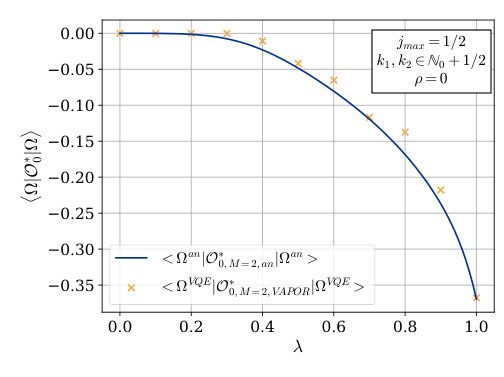
<figcaption class="paper-figure-caption"><b>Fig 4.</b> FIG. 4: Fixed-point 4-flux operator O∗ 0,M=2 as measurement for correlations on ground states. Analytical values (blue) are qualitatively matched by a noise-free QC-inspired simulation using VAPOR and VQE (orange).</figcaption>
</figure>
<figure class="paper-figure-card">
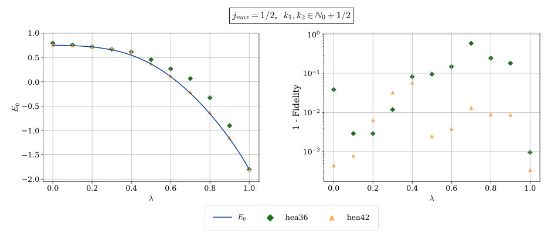
<figcaption class="paper-figure-caption"><b>Fig 5.</b> FIG. 5: VQE ground state simulation results using a HEA for jmax = 1/2. The left panel displays the exact analytical energies alongside the VQE-optimized energies across different coupling constants x and circuit depths. The right panel shows the state infidelity (1 −F), on logarithmic scales. The error metric demonstrates an improvement in ansatz performance even at relatively shallow circuit depth.</figcaption>
</figure>
</div>

<p><strong>Summary.</strong> The paper tackles the challenge of simulating continuum Quantum Field Theories using lattice methods by implementing Hamiltonian Renormalization Group (RG) flow on quantum computers. It introduces VAPOR, a novel variational algorithm that translates the complex fixed-point search of RG theory into a solvable quantum optimization problem. This provides a crucial pathway for extracting physically meaningful observables from highly correlated gauge theories on NISQ devices.</p>
<p><strong>Why it may be interesting.</strong> This work directly addresses how complex, continuum physics problems from high-energy theory can be mapped onto near-term quantum hardware by reformulating difficult spectral/flow problems into tractable variational optimization routines.</p>
<details>
<summary>Detailed structure</summary>
<p><strong>Main problem.</strong> The core problem is implementing Hamiltonian Renormalization Group (RG) flow, necessary to find discretization-error-free operators for continuum Quantum Field Theory (QFT), on quantum computers.</p>
<p><strong>Main result.</strong> The authors introduce VAPOR, a variational algorithm that successfully maps the fixed-point identification of RG flow onto a solvable quantum optimization problem, demonstrating its applicability to Lattice Gauge Theories.</p>
<p><strong>Method.</strong> They combine theoretical RG techniques—which involve defining operator families and identifying fixed points via spectral decomposition—with variational quantum algorithms (VAPOR/VQE) for numerical execution on near-term hardware.</p>
<p><strong>Model / system.</strong> The primary model is a Lattice Gauge Theory, specifically using a toy model of an SU(2) Yang-Mills theory. The Hamiltonian and operators are constructed within a spin-network basis to enforce gauge invariance.</p>
<p><strong>Key observables.</strong> Fixed-point 4-flux operator ($O^*$), ground state energy expectation values ($\langle O^* 
angle$), and the cost function $C(	heta)$ used for optimization.</p>
<p><strong>Important parameters / regimes.</strong> Coupling constants (e.g., $\lambda$), lattice size/cutoff ($j_{	ext{max}}$), and variational parameters ($    heta$) defining the quantum circuit ansatz depth.</p>
<p><strong>Assumptions / limitations.</strong> The VAPOR approach assumes that the RG flow can be restricted to finite-dimensional, RG-invariant Pauli orbits, allowing the fixed-point search to be framed as a constrained optimization problem.</p>
<p><strong>Figures summary.</strong> Figures illustrate the convergence of operator families under RG flow towards fixed points; they also compare simulated expectation values of the 4-flux operator using VAPOR/VQE against known analytical results for various coupling regimes.</p>
<p><strong>Paper structure.</strong> The paper systematically builds from continuum QFT concepts to lattice discretization (using spin-network bases), then develops the theoretical framework for RG flow on Pauli operators, and finally proposes and tests the variational quantum algorithm (VAPOR) to solve the resulting fixed-point optimization problem.</p>
</details>
<details>
<summary>Abstract</summary>
<p>While Hamiltonian Lattice Gauge Theory is gaining traction, today's limited numerical capacity leaves simulations affected by discretization errors. This motivates the implementation of renormalization group (RG) techniques to find discretization-error-free operators. To this end, we introduce VAPOR, a variational quantum algorithm that decomposes operators into Pauli strings, identifies RG flow orbits, and determines fixed points of a naively discretized operator. We illustrate this using a toy model of a kinematic operator in a symmetry-restricted SU(2) Yang-Mills theory.</p>
</details>
<p><sub><a href="#top">↑ back to top</a></sub></p>

<p><a id="paper-2606.12204"></a></p>
<h3 id="kinetic-kagome-magnetism-from-self-trapping-rvb-polarons-to-semiclassical-correlations"><a href="http://arxiv.org/abs/2606.12204v1">Kinetic kagome magnetism: from self-trapping RVB polarons to semiclassical correlations</a></h3>
<p><strong>Authors:</strong> Yufei Pei, Shuai A. Chen, Claudio Castelnovo, Roderich Moessner<br>
<strong>Type:</strong> theory · <strong>Category:</strong> strongly correlated electrons · <strong>PDF:</strong> <a href="https://arxiv.org/pdf/2606.12204v1">https://arxiv.org/pdf/2606.12204v1</a><br>
<strong>Analysis basis:</strong> full PDF text, analyzed in chunks
<strong>Topic relevance:</strong> <code>analog quantum simulation</code> <strong>3/5</strong> · <code>exotic spin models in light-matter</code> <strong>3/5</strong> · <code>entanglement &amp; information structure</code> <strong>1/5</strong> · <code>methods for driven-dissipative</code> <strong>1/5</strong> · <code>non-equilibrium dynamics</code> <strong>1/5</strong></p>
<div class="figure-strip-hint">↔ Scroll figures horizontally</div>
<div class="paper-figures-scroll">
<figure class="paper-figure-card">
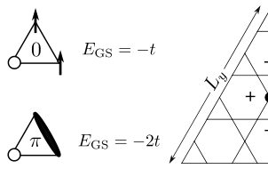
<figcaption class="paper-figure-caption"><b>Fig 1.</b> FIG. 1. (a) Kinetic magnetism in the presence of frustration favors the formation of valence bond singlets. (b) Kagome lattice geometry used in our simulations, for system size 𝑁= 3𝐿𝑥𝐿𝑦. We also show an example of a compact localized state around a single plaquette [24].</figcaption>
</figure>
<figure class="paper-figure-card">
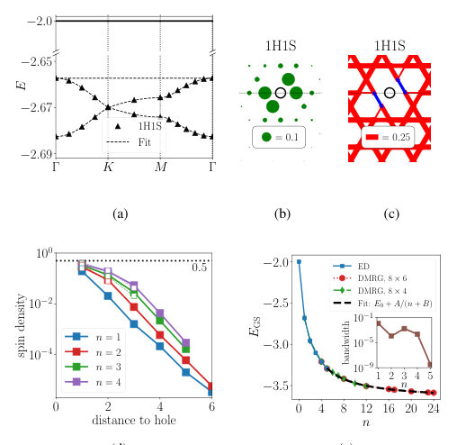
<figcaption class="paper-figure-caption"><b>Fig 2.</b> FIG. 2. Band structure for the 1H1S system of size 12 × 12 (a), ob- tained using ED; the dashed line shows a single-particle tight-binding fit with 𝑡eff≃−4.2 × 10−3 and offset ≃2.67. Spin density (b) and spin correlations (c) (red ferro and blue antiferro, with width propor- tional to their strength), for fixed hole position. Spin density pro- file (d) along the horizontal line in panel (b), for 1H𝑛S systems with 𝑛= 1, . . . , 4, comparing ED (solid squares) with Husimi cactus clus- ter results (open squares). The dependence of the GS energy of the 1H𝑛S systems on 𝑛is shown in panel (e), with the inset plotting our best estimate for the width of the lowest band from ED (see SI).</figcaption>
</figure>
<figure class="paper-figure-card">
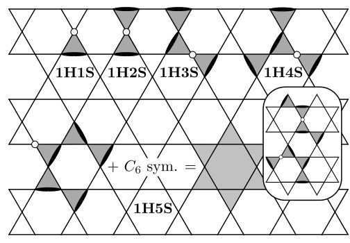
<figcaption class="paper-figure-caption"><b>Fig 3.</b> FIG. 3. Examples of Husimi cactus clusters used in the main text to understand the nature of the polarons. All symmetry-inequivalent clusters are shown for 1H𝑛S, with 1 ≤𝑛≤4. For 𝑛= 4, there are three possible configurations: a star-shaped one shown in the main figure, and two linear ones shown in the inset. For 𝑛= 5, only the most relevant shape is shown; with its five symmetry-equivalent part- ners, this shape covers a 12-site (shaded) region of the lattice. For each cluster, only one of the possible hole positions, and its corre- sponding valence bond arrangement, are shown.</figcaption>
</figure>
<figure class="paper-figure-card">
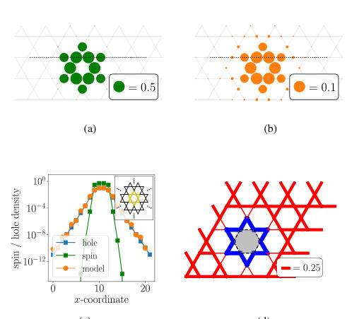
<figcaption class="paper-figure-caption"><b>Fig 4.</b> FIG. 4. Reversed spin (a) and hole (b) densities for one of the seemingly-localized 1H5S GSs. Profile cuts are shown in panel (c). The hole density is well-described by a simple model of a spinless fermion (see inset and main text) with unfrustrated hopping on a 12- site cluster (𝑡= −1, yellow edges), embedded on a periodic kagome lattice with frustrated hopping (𝑡= 1, black edges). The spin correla- tors (red for ferro, blue for antiferro) are shown in panel (d), with the thickness of the lines denoting their strength. Density results were obtained using DMRG and spin correlators using ED (see EM). A vanishing pinning potential was used to single out a given location for the RVB polaron in...</figcaption>
</figure>
<figure class="paper-figure-card">
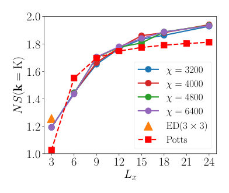
<figcaption class="paper-figure-caption"><b>Fig 5.</b> FIG. 5. Rescaled peak intensity at the 𝐾point for our unpolarized system on lattices of size 𝐿𝑥× 3, with 6 ≤𝐿𝑥≤24, obtained using DMRG (circles joined by solid lines). We also show the 3 × 3 result obtained using ED (yellow triangle). We compare these results with the behavior of the 3-state Potts model on lattices of size 𝐿𝑥×3, with 6 ≤𝐿𝑥≤24 (squares and dotted lines), which in 𝑑= 2 is known to sit on a KT transition between algebraic and long-range magnetic correlations.</figcaption>
</figure>
</div>

<p><strong>Summary.</strong> This paper investigates kinetic magnetism on the kagome lattice by studying how a single hole interacts with localized spins, forming RVB polarons. The authors show that as the system moves toward an unpolarized state, these short-range quantum correlations evolve into robust, long-range $\sqrt{3} \times \sqrt{3}$ antiferromagnetic order. By combining ED and DMRG, they bridge the gap between localized valence bond physics and conventional magnetic ordering.</p>
<p><strong>Why it may be interesting.</strong> This work provides a detailed theoretical mechanism linking microscopic quantum entanglement (RVB singlets) to macroscopic magnetic ordering ($\sqrt{3} \times \sqrt{3}$), which is crucial for understanding high-temperature superconductivity and frustrated magnetism in correlated materials.</p>
<details>
<summary>Detailed structure</summary>
<p><strong>Main problem.</strong> The study investigates how hole kinetics dictate magnetism in highly frustrated doped Mott insulators, specifically tracking the transition from short-range RVB polaron physics to long-range magnetic correlations.</p>
<p><strong>Main result.</strong> The research demonstrates a conceptual bridge where localized RVB polarons at low spin polarization evolve into conventional $\sqrt{3} \times \sqrt{3}$ antiferromagnetic order in the unpolarized limit.</p>
<p><strong>Method.</strong> The authors employ Exact Diagonalization (ED) and Density Matrix Renormalization Group (DMRG) techniques, supplemented by variational calculations using Husimi cactus clusters to model the hole-spin interactions.</p>
<p><strong>Model / system.</strong> The system is modeled as a single-hole counter-Nagaoka problem on the kagome lattice, governed by an infinite-$U$ Hubbard Hamiltonian. The physics is analyzed by tuning the magnetization parameter (doping level $n$).</p>
<p><strong>Key observables.</strong> Polaron bandwidth, spin and hole density profiles, spin structure factor $S(\mathbf{k})$, and ground state energy scaling.</p>
<p><strong>Important parameters / regimes.</strong> Magnetization/spin polarization ($n$), lattice geometry (kagome), and the transition between small-$n$ (localized) and large-$n$ (semiclassical) regimes.</p>
<p><strong>Assumptions / limitations.</strong> The analysis relies on modeling polarons using Husimi cactus clusters, and extrapolations to infinite systems from finite-size DMRG/ED calculations are necessary but carry potential self-interaction errors.</p>
<p><strong>Figures summary.</strong> Figures illustrate the formation of RVB polarons (Fig. 3), show band structures and spin correlations for small $n$ (Fig. 2, Fig. S1), and compare the resulting $\sqrt{3} \times \sqrt{3}$ magnetic order to classical Potts model benchmarks (Fig. S5, Fig. S12).</p>
<p><strong>Paper structure.</strong> The paper progresses by first establishing the polaron physics via ED for small doping ($n=1$ to $5$), showing self-trapping; it then uses DMRG for larger systems ($n\geq 5$) to observe the recovery of delocalized behavior and $\sqrt{3} \times \sqrt{3}$ order in the unpolarized limit, benchmarking this against classical models.</p>
</details>
<details>
<summary>Abstract</summary>
<p>To gain deeper insight into the role of hole kinetics in determining magnetism in highly frustrated doped Mott insulators, we consider the single-hole counter-Nagaoka problem on the kagome lattice, using magnetization as a tuning parameter. Near full polarization, a doped hole delocalizes upon binding reversed spins in a pattern of singlet bonds which we term resonating-valence-bond (RVB) polaron. These RVB polarons can have extremely small effective bandwidths, and hence exhibit self-trapping. By tuning the spin polarization, we track the evolution of these states toward the unpolarized sector, where we observe the emergence of $\sqrt{3}\times\sqrt{3}$ antiferromagnetic correlation reminiscent of the classical Potts and Heisenberg models on the kagome lattice. These results provide a framework to understand how RVB physics at short scales evolves into conventional magnetic correlations at long scales.</p>
</details>
<p><sub><a href="#top">↑ back to top</a></sub></p>

<p><a id="paper-2606.12038"></a></p>
<h3 id="phonons-and-magnetism-of-kagome-fege-probed-by-nuclear-resonant-scattering"><a href="http://arxiv.org/abs/2606.12038v1">Phonons and magnetism of kagome FeGe probed by nuclear resonant scattering</a></h3>
<p><strong>Authors:</strong> Yu Tang, Saizheng Cao, Sijie Xu, Xiaokun Teng, Sven Velten, Ilya Sergeev, Pengcheng Dai, Yilin Wang, Yu Song<br>
<strong>Type:</strong> experiment · <strong>Category:</strong> strongly correlated electrons · <strong>PDF:</strong> <a href="https://arxiv.org/pdf/2606.12038v1">https://arxiv.org/pdf/2606.12038v1</a><br>
<strong>Analysis basis:</strong> full PDF text, analyzed in chunks
<strong>Topic relevance:</strong> <code>spintronics-quantum-optics interface</code> <strong>3/5</strong> · <code>Frenkel-Kontorova</code> <strong>2/5</strong> · <code>Kondo &amp; dissipative impurity</code> <strong>1/5</strong> · <code>analog quantum simulation</code> <strong>1/5</strong> · <code>driven-dissipative phase transition</code> <strong>1/5</strong> · <code>exotic spin models in light-matter</code> <strong>1/5</strong></p>
<div class="figure-strip-hint">↔ Scroll figures horizontally</div>
<div class="paper-figures-scroll">
<figure class="paper-figure-card">
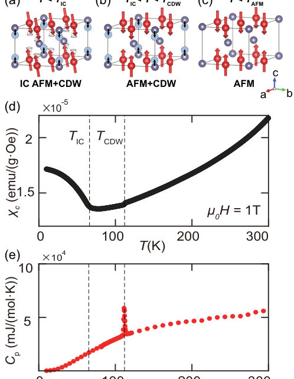
<figcaption class="paper-figure-caption"><b>Fig 1.</b> FIG. 1. Schematic crystal and magnetic structures of FeGe for (a) T &lt; TIC, (b) TIC &lt; T &lt; TCDW, and (c) T &lt; TN [12]. (d) The magnetic susceptibility of FeGe measured in a 1 T c-axis field. (e) The specific heat of FeGe.</figcaption>
</figure>
<figure class="paper-figure-card">
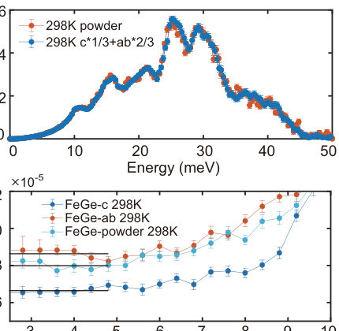
<figcaption class="paper-figure-caption"><b>Fig 2.</b> FIG. 2. (a) The c-axis- and ab-plane-polarized Fe partial PDOS of FeGe at RT, gc(E) and gab(E). (b) Comparison of the Fe partial PDOS g(E), with 1</figcaption>
</figure>
<figure class="paper-figure-card">
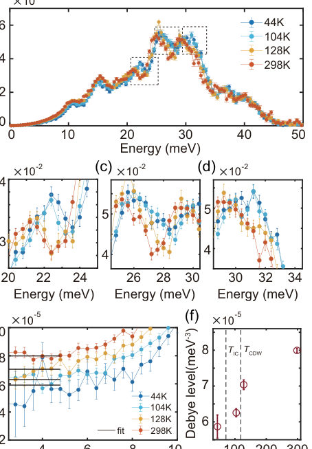
<figcaption class="paper-figure-caption"><b>Fig 3.</b> FIG. 3. (a) The Fe partial PDOS of FeGe g(E), measured at several temperatures. Zoomed-in views of g(E) are shown around (b) ∼22 meV, (c) ∼27 meV, and (d) ∼31 meV. (d) Temperature dependence of g(E)/E2. The solids lines are fits to obtain the Debye level. (f) Temperature dependence of the Debye level.</figcaption>
</figure>
<figure class="paper-figure-card">
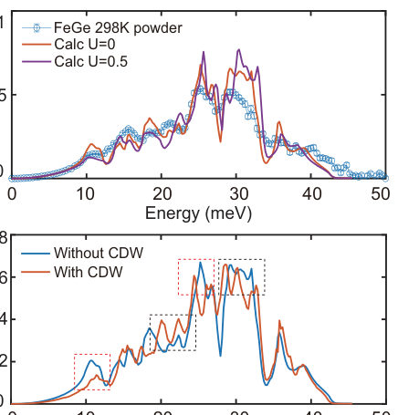
<figcaption class="paper-figure-caption"><b>Fig 4.</b> FIG. 4. (a) Calculated Fe partial PDOS with and without Coulomb interaction U. (b) Comparison of the calculated Fe partial PDOS of FeGe with and without CDW. The dashed boxes highlight energies ranges that are significantly by the CDW.</figcaption>
</figure>
<figure class="paper-figure-card">

<figcaption class="paper-figure-caption"><b>Fig 5.</b> Fig. 4(a) shows the calculated PDOS for FeGe without CDW, showing an overall reasonable agreement with ex- perimental data at RT. DFT underestimates the PDOS above ∼40 meV and overestimates the PDOS around ∼31 meV, which is unaffected by the soft force constant and the Coulomb interaction U in the calculations. Such a systematic deviation between DFT and experimental PDOS may result from the presence of significant elec- tronic correlations in FeGe, which cannot be captured using single-particle calculations.</figcaption>
</figure>
</div>

<p><strong>Summary.</strong> The research investigates the complex interplay between charge density waves and magnetism in kagome FeGe using advanced spectroscopic techniques. By measuring phonon spectra and magnetic hyperfine fields across phase transitions, the authors demonstrate that the formation of a CDW significantly alters the lattice structure while probing subtle differences in coupling strength at subsequent magnetic transitions.</p>
<p><strong>Why it may be interesting.</strong> This work exemplifies how lattice dynamics measurements (phonons) can be used as highly sensitive probes for subtle electronic instabilities like CDWs, which is relevant in understanding correlated electron behavior beyond simple band theory descriptions.</p>
<details>
<summary>Detailed structure</summary>
<p><strong>Main problem.</strong> To investigate the interplay between charge density wave (CDW) order, antiferromagnetic (AFM) order, and lattice dynamics in kagome FeGe.</p>
<p><strong>Main result.</strong> The CDW state significantly modifies the lattice dynamics by causing phonon hardening, while the AFM order is enhanced below $T_{CDW}$. The coupling between CDW and magnetism appears distinct from the behavior observed at the incommensurate magnetic transition ($T_{IC}$).</p>
<p><strong>Method.</strong> The study employs $^{57}	ext{Fe}$ Nuclear Inelastic Scattering (NIS) to probe phonon density of states, time-domain Mössbauer spectroscopy to measure hyperfine interactions, and is complemented by specific heat and susceptibility measurements.</p>
<p><strong>Model / system.</strong> The physical system is kagome FeGe. The analysis probes the material's behavior across multiple electronic/structural transitions ($T_{CDW}$ and $T_{IC}$) which involve coupled spin, charge, and lattice degrees of freedom.</p>
<p><strong>Key observables.</strong> Phonon density of states (PDOS) hardening at specific energies ($\sim 22	ext{ meV}, 27	ext{ meV}, 31	ext{ meV}$); magnetic hyperfine field ($\vec{B}_{hf}$) enhancement; changes in lattice dynamics parameters like the Debye level.</p>
<p><strong>Important parameters / regimes.</strong> Transition temperatures ($T_{CDW} \approx 115	ext{ K}$, $T_{IC} \approx 65	ext{ K}$); phonon energies (22, 27, 31 meV).</p>
<p><strong>Assumptions / limitations.</strong> The analysis assumes that the observed changes in lattice dynamics and magnetism are directly coupled to the formation of the CDW state. DFT calculations provide a theoretical baseline for comparison.</p>
<p><strong>Figures summary.</strong> Figures illustrate the temperature dependence of the Fe partial PDOS showing hardening across $T_{CDW}$, and show time-domain Mössbauer spectra detailing magnetic hyperfine field changes around both transition temperatures.</p>
<p><strong>Paper structure.</strong> The paper systematically analyzes experimental data (NIS, Mössbauer) across different temperature regimes relative to known phase transitions ($T_{CDW}, T_{IC}$). It compares these findings against theoretical DFT calculations to build a comprehensive picture of the coupled order parameters.</p>
</details>
<details>
<summary>Abstract</summary>
<p>Kagome FeGe hosts a $2\times2\times2$ charge-density wave (CDW) that strongly interplays with antiferromagnetic order. Here, we report $^{57}$Fe nuclear resonant scattering measurement to study FeGe across its long-range CDW and incommensurate magnetic transitions. Upon entering the CDW state, hardening of acoustic phonons and optical phonons around 22~meV, 27~meV, and 31~meV are observed in the Fe partial phonon density of states, which can be qualitatively captured by first-principle calculations. Upon entering the incommensurate magnetic phase, neither the phonon density of states nor the hyperfine interaction parameters change significantly, although a subtle feature associated with the incommensurate magnetic order or slow fluctuations is detected in the time-domain Mössbauer spectra. These findings show that the CDW in kagome FeGe significantly modifies its lattice dynamics and magnetism, evidencing an intertwined nature of the spin, charge, and lattice degrees of freedom.</p>
</details>
<p><sub><a href="#top">↑ back to top</a></sub></p>

<p><a id="paper-2606.11584"></a></p>
<h3 id="chiral-magnons-and-cycloidal-phonons-in-altermagnetic-cufmath475math-monolayer"><a href="http://arxiv.org/abs/2606.11584v1">Chiral Magnons and Cycloidal Phonons in Altermagnetic CuF$_{2}$ Monolayer</a></h3>
<p><strong>Authors:</strong> Andrea M. León, Matías F. Torreblanca, Carmine Autieri, Jhon W. González<br>
<strong>Type:</strong> theory · <strong>Category:</strong> other · <strong>PDF:</strong> <a href="https://arxiv.org/pdf/2606.11584v1">https://arxiv.org/pdf/2606.11584v1</a><br>
<strong>Analysis basis:</strong> full PDF text, analyzed in chunks
<strong>Topic relevance:</strong> <code>exotic spin models in light-matter</code> <strong>3/5</strong> · <code>spintronics-quantum-optics interface</code> <strong>3/5</strong> · <code>analog quantum simulation</code> <strong>1/5</strong> · <code>non-equilibrium dynamics</code> <strong>1/5</strong></p>
<div class="figure-strip-hint">↔ Scroll figures horizontally</div>
<div class="paper-figures-scroll">
<figure class="paper-figure-card">
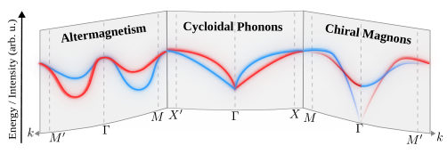
<figcaption class="paper-figure-caption"><b>Fig 1.</b> Figure 1: Schematic representation of altermagnetic spin-splitting, cycloidal phonons and chiral magnons in CuF2.</figcaption>
</figure>
<figure class="paper-figure-card">
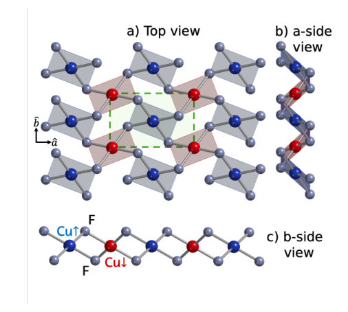
<figcaption class="paper-figure-caption"><b>Fig 2.</b> Figure 2: (a) Top view of the CuF2 monolayer. Panels (b) and (c) display side views along the a-b plane. The dashed green line encloses the unit cell.</figcaption>
</figure>
<figure class="paper-figure-card">
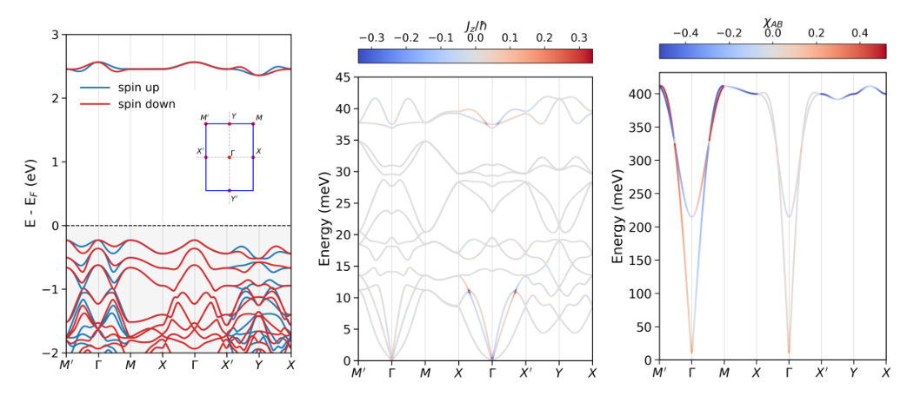
<figcaption class="paper-figure-caption"><b>Fig 3.</b> Figure 3: (a) Electronic band structure highlighting the path with non-relativistic spin splittings and spin degeneracy. In the inset, we report the high-symmetry k-points of the two-dimensional Brillouin zone. (b) Phonon dispersion along with the mode-resolved phonon angular momentum. (c) Magnon band structure. The color scale represents the magnitude and sign of the phonon angular momentum Jz and the inter-sublattice coherence χAB, which quantifies the degree of hybridization between the A and B sublattices. Red (blue) indicates negative (positive) values of χAB.</figcaption>
</figure>
<figure class="paper-figure-card">
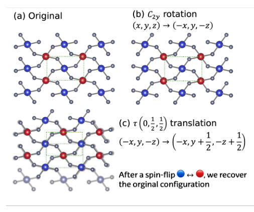
<figcaption class="paper-figure-caption"><b>Fig 4.</b> Figure 4: Symmetry operations leading to the alter- magnetic character: (a) Original structure. (b) and (c) Rotation and translation operations required to connect the spin-up and spin-down sublattices.</figcaption>
</figure>
</div>

<p><strong>Summary.</strong> The research investigates how the underlying crystal symmetries of altermagnetic CuF2 simultaneously govern both its magnetic (magnon) and lattice (phonon) collective excitations. The key finding is that magnon chirality and phonon angular momentum are directionally complementary, confirming a unified symmetry framework controls these distinct physical responses in 2D materials.</p>
<p><strong>Why it may be interesting.</strong> This work provides a direct theoretical link between electronic topology (altermagnetism/Chern numbers) and emergent collective excitations (magnons/phonons), which is highly relevant for designing novel spintronic or phononics devices based on symmetry control.</p>
<details>
<summary>Detailed structure</summary>
<p><strong>Main problem.</strong> Investigating whether symmetry principles governing electronic structure (altermagnetism) also govern collective spin and lattice excitations, and if the chiral responses of these two sectors are related.</p>
<p><strong>Main result.</strong> The study shows that monolayer CuF2 hosts both chirality-split magnons and cycloidal phonons controlled by the same non-symmorphic symmetry operations. Crucially, phonon and magnon chiral responses exhibit a directionally complementary relationship in momentum space.</p>
<p><strong>Method.</strong> First-principles calculations (VASP) combined with linear spin-wave theory for magnons and Density Functional Perturbation Theory (DFPT) for phonons were employed to analyze the coupled spin and lattice dynamics.</p>
<p><strong>Model / system.</strong> The system studied is monolayer CuF2, an altermagnetic material whose behavior is dictated by its non-symmorphic crystal symmetry operations ($P2_1/c$). The analysis models both magnetic interactions (exchange, DMI) and lattice vibrations.</p>
<p><strong>Key observables.</strong> Magnon Chern numbers ($C^M = \pm 2$), phonon angular momentum ($J_{q
u}$), magnon chirality ($\chi_{AB}(\mathbf{k})$), and electronic spin splitting patterns.</p>
<p><strong>Important parameters / regimes.</strong> The magnetic interactions include isotropic exchange, symmetric anisotropic exchange, and Dzyaloshinskii-Moriya interaction. The system is analyzed in the context of $d$-wave altermagnetism.</p>
<p><strong>Assumptions / limitations.</strong> Phonon calculations were performed without spin-orbit coupling, and the initial magnetic structure (collinear AFM Néel order) breaks pure inversion symmetry despite the crystal structure possessing it.</p>
<p><strong>Figures summary.</strong> Figures schematically summarize the interplay between altermagnetism, cycloidal phonons, and chiral magnons. Other figures illustrate electronic band structures with momentum-dependent spin splittings and phonon dispersion showing angular momentum.</p>
<p><strong>Paper structure.</strong> The paper establishes the theoretical framework by analyzing how non-symmorphic symmetries govern both magnetic (magnon) and lattice (phonon) excitations in CuF2. It then presents results demonstrating the shared symmetry control, highlighting the complementary nature of their chiral responses and confirming topological properties via Chern numbers.</p>
</details>
<details>
<summary>Abstract</summary>
<p>Altermagnetism establishes momentum-dependent spin splitting through non-symmorphic crystal symmetries, yet whether these same symmetries simultaneously govern spin and lattice collective excitations remains open. Here we show, using first-principles calculations and linear spin-wave theory, that monolayer CuF$_2$ hosts both chirality-split magnons and cycloidal phonons controlled by the same $P2_1/c$ symmetry operations. The altermagnetic order drives strongly anisotropic magnon chirality via symmetric anisotropic exchange, with Dzyaloshinskii--Moriya interactions acting as a weak secondary modulation. Crucially, the phonon and magnon chiral responses are directionally complementary: cycloidal phonon angular momentum emerges precisely where magnon chirality is symmetry-suppressed, and vice versa. The magnon bands further carry quantized Chern numbers $C^M = \pm 2$, confirming non-trivial altermagnetic topology. These results establish monolayer CuF$_2$ as a platform where a single symmetry framework engineers magnonic, phononic, and topological responses, providing a direct connection between altermagnetism and spin-lattice chirality in two-dimensional materials.</p>
</details>
<p><sub><a href="#top">↑ back to top</a></sub></p>

<p><a id="paper-2606.12079"></a></p>
<h3 id="a-semi-definite-programming-formulation-of-the-device-dependent-guessing-probability"><a href="http://arxiv.org/abs/2606.12079v1">A semi-definite programming formulation of the device-dependent guessing probability</a></h3>
<p><strong>Authors:</strong> Raffaele D'Avino, Aurora Mugnai, Miguel Navascués, Antonio Acín, Gabriel Senno<br>
<strong>Type:</strong> theory · <strong>Category:</strong> quantum information and computing · <strong>PDF:</strong> <a href="https://arxiv.org/pdf/2606.12079v1">https://arxiv.org/pdf/2606.12079v1</a><br>
<strong>Analysis basis:</strong> full PDF text, analyzed in chunks
<strong>Topic relevance:</strong> <code>quantum measurements</code> <strong>3/5</strong> · <code>entanglement &amp; information structure</code> <strong>2/5</strong> · <code>correlated / nonlocal dissipation</code> <strong>1/5</strong> · <code>measurement-induced transitions</code> <strong>1/5</strong></p>
<div class="figure-strip-hint">↔ Scroll figures horizontally</div>
<div class="paper-figures-scroll">
<figure class="paper-figure-card">
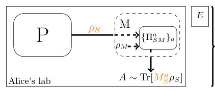
<figcaption class="paper-figure-caption"><b>Fig 1.</b> FIG. 1: Characterized but untrusted PM setup. Alice holds a PM device that prepares a system S in some known state ρS. In the measurement box M, an unknown PVM {Πa SM}a is performed, whose outcome statistics are described by the known POVM {M a S}a. Eve holds a purification |ψ⟩SME of the joint state ρSM of the system S and the ancillary system ρM inside M.</figcaption>
</figure>
<figure class="paper-figure-card">
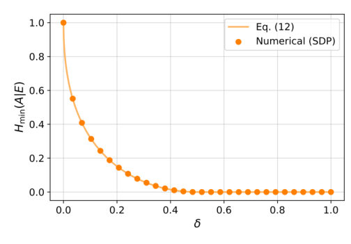
<figcaption class="paper-figure-caption"><b>Fig 2.</b> FIG. 2: Hmin(A|E) obtained via our SDP for the setting in Eq. (11) (dots), compared with the analytic results for the corresponding quantity (solid line).</figcaption>
</figure>
<figure class="paper-figure-card">
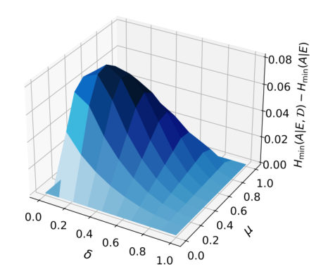
<figcaption class="paper-figure-caption"><b>Fig 3.</b> FIG. 3: Difference between the conditional min-entropy Hmin(A|E) evaluated on the specific dilation in Eq. (14) and the value obtained via our SDP optimizing over all possible dilations.</figcaption>
</figure>
<figure class="paper-figure-card">
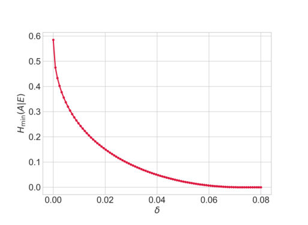
<figcaption class="paper-figure-caption"><b>Fig 4.</b> FIG. 5: Conditional min-entropy Hmin(A|E) for k = 3 as a function of the depolarizing noise parameter δ of the measurement. The min-entropy decreases rapidly as the noise increases and vanishes around δ ≃0.073.</figcaption>
</figure>
<figure class="paper-figure-card">
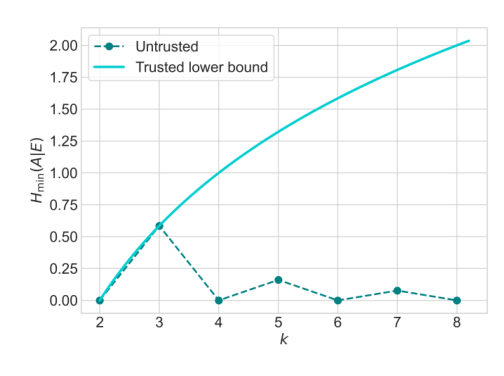
<figcaption class="paper-figure-caption"><b>Fig 5.</b> FIG. 4: Conditional min-entropy Hmin(A|E) as a func- tion of the number of outcomes k for an equiangular POVM in the XZ plane of the Bloch sphere. The solid line represents the theoretical lower bound mn = log2(n) −1 assuming fully trusted measurements, while the points show the corresponding values obtained via our SDP formulation, without assuming trusted measure- ments. For k &gt; 3, assuming trusted measurements sig- nificantly overestimates the min-entropy.</figcaption>
</figure>
</div>

<p><strong>Summary.</strong> This paper introduces an SDP formulation to calculate the device-dependent guessing probability in prepare-and-measure quantum setups. By reformulating the problem using moment matrices, the authors provide a computationally efficient method to quantify intrinsic randomness. The results demonstrate that assuming ideal or separable conditions can significantly overestimate the true amount of extractable randomness.</p>
<p><strong>Why it may be interesting.</strong> This work provides a powerful, general tool for quantifying fundamental limits on randomness extraction in realistic quantum devices, which is crucial for assessing the security of quantum communication protocols.</p>
<details>
<summary>Detailed structure</summary>
<p><strong>Main problem.</strong> The work aims to develop a computationally tractable method, specifically using Semidefinite Programming (SDP), to estimate the maximum probability with which an adversary can guess the outcomes in device-dependent prepare-and-measure quantum setups.</p>
<p><strong>Main result.</strong> The authors successfully formulate this guessing probability as an SDP, providing a complete characterization of the intrinsic randomness extractable from such physical processes. They also show that entanglement between preparation and measurement devices strictly increases Eve's predictive power.</p>
<p><strong>Method.</strong> The core method involves reformulating a non-convex optimization problem into an equivalent SDP by utilizing generalized moment matrices derived from the quantum state and measurement operators.</p>
<p><strong>Model / system.</strong> The model is a general prepare-and-measure (PM) setup where Alice prepares a system $S$ in $
ho_S$, followed by a POVM $\{M_a^S\}$ on an auxiliary system $M$. Eve possesses side information $E$, and the analysis quantifies her ability to predict measurement outcomes.</p>
<p><strong>Key observables.</strong> The device-dependent guessing probability ($P_{	ext{guess}}$) and the associated conditional min-entropy ($H_{\min} = -\log_2 P_{	ext{guess}}$).</p>
<p><strong>Important parameters / regimes.</strong> Noise parameters ($\delta$, $\epsilon$), number of measurement outcomes ($k$), and the degree of entanglement between preparation and measurement devices.</p>
<p><strong>Assumptions / limitations.</strong> The SDP formulation relies on mapping the problem into moment matrices, which provides sufficient conditions for the existence of the underlying quantum structure (projective measurements).</p>
<p><strong>Figures summary.</strong> Figures compare the calculated conditional min-entropy ($H_{\min}(A|E)$) from the general SDP against known analytical bounds in various noisy and constrained scenarios. They also illustrate how assuming trusted measurements or separable correlations leads to overestimations of randomness.</p>
<p><strong>Paper structure.</strong> The paper systematically develops the mathematical framework by first defining the problem, then reformulating it using moment matrices ($\Gamma_e$), establishing equivalence via Theorem 1, and finally applying this SDP formulation to benchmark various physical scenarios (depolarizing noise, measurement constraints).</p>
</details>
<details>
<summary>Abstract</summary>
<p>In quantum mechanics, a measurement applied to a state in general produces some amount of intrinsic randomness. This is not only a fundamental feature of the theory, but is also at the basis of any quantum process to generate random numbers. The simplest of such processes consists of a single, fully charaterized, measurement acting on a single, fully characterized, state. Unfortunately, no general method to estimate the intrinsic randomness produced in such setups is known. In this work, we address this issue by presenting a semidefinite programming formulation of the maximum probability with which an adversary, Eve, can guess the outcomes of characterized but untrusted prepare-and-measure setups. We then present several applications of this construction. First, we apply our method to a variety of specific setups, allowing us both to benchmark the approach and, more importantly, to determine the exact amount of certifiable randomness in scenarios where only upper bounds were previously available. Then, we show that the presence of entanglement between the device preparing the state and the measurement strictly increases Eve's predictive power, already in the most elementary setup of a binary measurement acting on a qubit state.</p>
</details>
<p><sub><a href="#top">↑ back to top</a></sub></p>

<p><a id="paper-2606.12353"></a></p>
<h3 id="gate-tunable-spin-valley-transport-via-carrier-velocity-in-monolayer-wsemath495math"><a href="http://arxiv.org/abs/2606.12353v1">Gate-tunable spin-valley transport via carrier velocity in monolayer WSe$_2$</a></h3>
<p><strong>Authors:</strong> Otman Bouladiane, Hocine Bahlouli, Clarence Cortes, David Laroze, Ahmed Jellal<br>
<strong>Type:</strong> theory · <strong>Category:</strong> other · <strong>PDF:</strong> <a href="https://arxiv.org/pdf/2606.12353v1">https://arxiv.org/pdf/2606.12353v1</a><br>
<strong>Analysis basis:</strong> full PDF text, analyzed in chunks
<strong>Topic relevance:</strong> <code>spintronics-quantum-optics interface</code> <strong>3/5</strong> · <code>Kondo &amp; dissipative impurity</code> <strong>1/5</strong> · <code>analog quantum simulation</code> <strong>1/5</strong> · <code>exotic spin models in light-matter</code> <strong>1/5</strong> · <code>non-equilibrium dynamics</code> <strong>1/5</strong></p>
<div class="figure-strip-hint">↔ Scroll figures horizontally</div>
<div class="paper-figures-scroll">
<figure class="paper-figure-card">
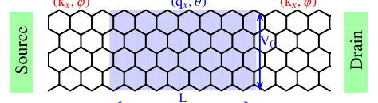
<figcaption class="paper-figure-caption"><b>Fig 1.</b> FIG. 1: Schematic of the device based on a monolayer WSe2, where the tunneling setup consists of three re- gions: region I (source), where the incident carriers are characterized by velocity v1 and angle ϕ (regions I and III); region II, corresponding to a potential barrier of height V0 and width L with the velocity v2 and angle θ; and region III (drain), which retains the same parame- ters as region I.</figcaption>
</figure>
<figure class="paper-figure-card">

<figcaption class="paper-figure-caption"><b>Fig 2.</b> FIG. 2: Spin- and valley-dependent energy dispersion Eτsz s as a function of wave vector components kτsz x and qτsz x along x-direction for V0 = 45 meV, and L = 7 nm. (a): kτsz x in regions I and III. (b–d): qτsz x in region II showing the effect of the velocity ratio (b): ξ = 0.5, (c): ξ = 1, and (d): ξ = 1.5 (as adopted in [44]) on each energy channel Eτsz s .</figcaption>
</figure>
<figure class="paper-figure-card">
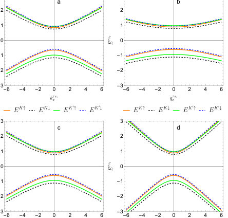
<figcaption class="paper-figure-caption"><b>Fig 3.</b> Figure 2 shows how energy disperses based on differ- ent spin and valley states when the wave-vector reaches various magnitudes. Fig. 2a displays the electronic dis- persion expressed in Eq. (15) for zero external potential V (x) = 0, which measures the longitudinal wave-vector component kx. The resulting spectrum consists of eight parabolic bands, with the largest band gap occurring for the K↑and K′↓states. The inclusion of a Zeeman field breaks the valley symmetry and introduces an energy asymmetry between the K and K′ valleys, while the</figcaption>
</figure>
<figure class="paper-figure-card">
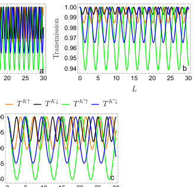
<figcaption class="paper-figure-caption"><b>Fig 4.</b> FIG. 4: Spin- and valley-dependent transmission as a function of the barrier width L for V0 = 45 meV, Eτsz = 1.05 eV, ϕτsz = 20◦, and three velocity ratio values (a): ξ = 0.5, (b): ξ = 1, (c): ξ = 1.5.</figcaption>
</figure>
<figure class="paper-figure-card">
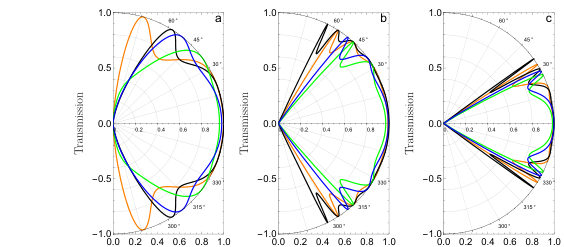
<figcaption class="paper-figure-caption"><b>Fig 5.</b> FIG. 3: Spin- and valley-dependent transmission as a function of incident angle ϕτsz for V0 = 45 meV, L = 7 nm, Eτsz = 1.05 eV, and three velocity ratio values (a): ξ = 0.5, (b): ξ = 1, (c): ξ = 1.5.</figcaption>
</figure>
</div>

<p><strong>Summary.</strong> The paper theoretically models spin- and valley-resolved quantum transport in WSe2 through a tunable electrostatic barrier. By engineering the Fermi velocity within this barrier, the authors show that the system acts as a powerful quantum filter. This method allows for precise control over spin and valley polarization by manipulating interference conditions, establishing a key framework for 2D material electronics.</p>
<p><strong>Why it may be interesting.</strong> This work provides a concrete example of engineering quantum transport by manipulating internal degrees of freedom (spin/valley) via external fields or geometric parameters (velocity profile), which is highly relevant to advanced spintronics and valleytronics concepts often studied in AMO physics contexts.</p>
<details>
<summary>Detailed structure</summary>
<p><strong>Main problem.</strong> The study investigates spin- and valley-resolved quantum transport through a finite barrier region in monolayer WSe2.</p>
<p><strong>Main result.</strong> The work demonstrates that combining velocity modulation (Fermi velocity engineering) and potential barriers allows for the strong, continuous tuning of both the magnitude and orientation of spin-valley polarized currents.</p>
<p><strong>Method.</strong> The authors solved the time-independent Schrödinger equation using an effective massive Dirac Hamiltonian, enforcing current-conserving matching conditions at interfaces to calculate transmission probabilities and conductance.</p>
<p><strong>Model / system.</strong> The physical system is monolayer tungsten diselenide (WSe2), modeled by a low-energy effective massive Dirac Hamiltonian that incorporates intrinsic spin-orbit coupling and tunable Zeeman fields. The transport analysis focuses on the quantum tunneling through an electrostatic barrier region where both the scalar potential and Fermi velocity are modulated.</p>
<p><strong>Key observables.</strong> Spin- and valley-dependent transmission probability ($T_{	au s z}$), conductance ($G_{	au}, G_{s\sigma}$), spin polarization ($P_s$), and valley polarization ($P_v$).</p>
<p><strong>Important parameters / regimes.</strong> Barrier velocity modulation ratio ($\xi = v_2/v_1$), barrier width ($L$), barrier height ($V_0$), incident energy ($E_{	au s z}$), and intrinsic coupling strengths ($\lambda_c, \lambda_v, M_s, M_v$).</p>
<p><strong>Assumptions / limitations.</strong> Edge effects are neglected (assuming translational invariance along the y-axis), and the simple velocity ratio $\xi = v_2/v_1$ is only recovered in the massless, symmetric limit.</p>
<p><strong>Figures summary.</strong> Figures illustrate how transmission ($T_{	au s z}$) varies with incident angle ($\phi$), barrier width ($L$), potential height ($V_0$), and critically, the velocity ratio ($\xi$). These plots show resonant tunneling features and Fabry-Pérot oscillations modulated by $\xi$.</p>
<p><strong>Paper structure.</strong> The paper develops a theoretical framework based on solving the Dirac equation in three regions (Source-Barrier-Drain). It calculates transport quantities using matching boundary conditions, demonstrating how varying parameters like velocity ratio ($\xi$) acts as an effective control mechanism for spin-valley filtering.</p>
</details>
<details>
<summary>Abstract</summary>
<p>We theoretically investigate spin- and valley-resolved quantum transport in monolayer tungsten diselenide (WSe$_2$) described by an effective massive Dirac Hamiltonian. Particular attention is devoted to a finite barrier region characterized by simultaneously modulated Fermi velocity and scalar potential. The barrier velocity $v_2$ is related to the external velocity $v_1$ through a velocity ratio $ξ=v_2/v_1$, motivated by an optical analogy with the Snell-Descartes law. The exact refraction condition depends on the full spin- and valley-resolved dispersion, and the simple ratio $ξ=v_2/v_1$ is recovered only in the massless, symmetric limit. The interplay of intrinsic spin-orbit coupling in the conduction and valence bands, quantified by $λ_c$ and $λ_v$, with spin- and valley-dependent Zeeman fields, $M_s$ and $M_v$, gives rise to substantial changes in the quasiparticle dispersion, leading to pronounced modifications of the transport characteristics. By solving the Dirac equation and enforcing current-conserving matching conditions at the interfaces, we compute the spin- and valley-dependent transmission probability and conductance. Our results demonstrate that the barrier velocity, scalar potential, incidence angle, incident energy, and barrier width serve as effective control parameters for transport, giving rise to strong anisotropy and resonant tunneling features. Furthermore, we show that both the magnitude and orientation of spin- and valley-polarized currents can be continuously tuned via velocity and potential modulation. These findings establish combined velocity and potential engineering as a powerful theoretical framework for controlling spin-valley physics in two-dimensional transition-metal dichalcogenides.</p>
</details>
<p><sub><a href="#top">↑ back to top</a></sub></p>

<p><a id="paper-2606.11608"></a></p>
<h3 id="machs-principle-in-atomic-transitions"><a href="http://arxiv.org/abs/2606.11608v1">Mach's principle in atomic transitions</a></h3>
<p><strong>Authors:</strong> Subhajit Barman, Bibhas Ranjan Majhi<br>
<strong>Type:</strong> theory · <strong>Category:</strong> other · <strong>PDF:</strong> <a href="https://arxiv.org/pdf/2606.11608v1">https://arxiv.org/pdf/2606.11608v1</a><br>
<strong>Analysis basis:</strong> full PDF text, analyzed in chunks
<strong>Topic relevance:</strong> <code>Keldysh / 2PI / non-Gaussian methods</code> <strong>3/5</strong> · <code>correlated / nonlocal dissipation</code> <strong>1/5</strong> · <code>driven-dissipative phase transition</code> <strong>1/5</strong> · <code>methods for driven-dissipative</code> <strong>1/5</strong> · <code>non-equilibrium dynamics</code> <strong>1/5</strong></p>
<div class="figure-strip-hint">↔ Scroll figures horizontally</div>
<div class="paper-figures-scroll">
<figure class="paper-figure-card">
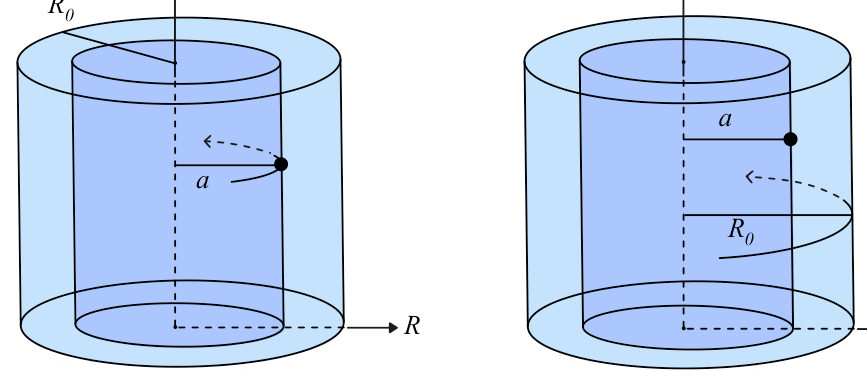
<figcaption class="paper-figure-caption"><b>Fig 1.</b> FIG. 1: In the above figure, we have provided the schematic diagrams for the two different scenarios. On the left, the atom is in circular motion maintaining a radial distance a from the central axis, i.e., the Z−axis. At the same time, the mirror is a static cylinder of radius R0. On the right, the atom is static at a radial distance a from the central axis. In the second scenario, the mirror is cylindrical, with radius R0, and rotates about its central axis.</figcaption>
</figure>
<figure class="paper-figure-card">
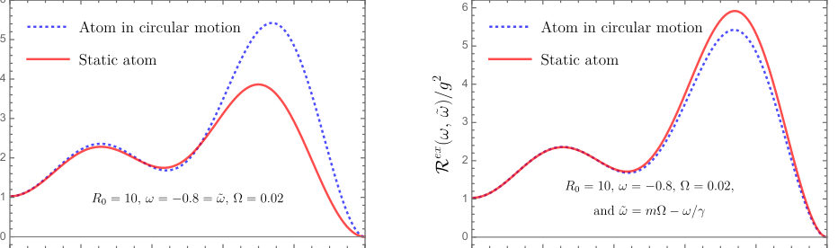
<figcaption class="paper-figure-caption"><b>Fig 2.</b> FIG. 2: In the above figure, we have plotted Rex(ω)/g2 and Rex(˜ω)/g2, that respectively represent the atomic transition probability rates corresponding to two different scenarios, with respect to the radial position of the atom a. In particular, on the left, we consider the atomic energy gaps to be ω = ˜ω. At the same time, on the right, we choose ˜ω = m Ω−ω/γ. We choose the maximum value in the numerical sum over n to be 20 and, over m, from −20 to 20, beyond which we do not observe any deviation from the obtained results. We choose other parameters suitably. From both plots, one can notice that the transition rates are qualitatively equivalent. Moreover, in the right plot, when ˜ω = m...</figcaption>
</figure>
</div>

<p><strong>Summary.</strong> The paper theoretically examines atomic transitions near a cylindrical mirror under two different dynamic conditions: the atom moving or the mirror rotating. By calculating transition probabilities in both scenarios, the authors demonstrate a structural equivalence between the results when field frequencies are interchanged. This finding is presented as compelling evidence for a quantum mechanical manifestation of Mach's principle.</p>
<p><strong>Why it may be interesting.</strong> This work directly addresses fundamental principles like Mach's principle using quantum electrodynamics/field theory in non-inertial frames, which is highly relevant to advanced AMO physics concerning vacuum structure and boundary effects.</p>
<details>
<summary>Detailed structure</summary>
<p><strong>Main problem.</strong> The study investigates structural similarities in atomic transition probabilities when comparing two scenarios: an atom moving in a static cylindrical mirror versus a static atom near a rotating mirror.</p>
<p><strong>Main result.</strong> The calculated transition probability rates show structural equivalence upon interchanging the field mode frequencies between the two non-inertial reference frames, suggesting a quantum analogue to Mach's principle.</p>
<p><strong>Method.</strong> Transition probabilities are calculated using perturbation theory (Dyson series) for an Unruh-DeWitt detector coupled to a scalar quantum field confined by a cylindrical boundary. The analysis involves comparing time-integrated and rate-defined quantities in both static and rotating coordinates.</p>
<p><strong>Model / system.</strong> The system models an atom interacting with a background real scalar quantum field ($\phi$) whose modes are constrained by a perfect reflecting cylindrical mirror. The comparison is drawn between the case where the atom undergoes circular motion inside a fixed mirror, and the case where the mirror rotates while the atom remains stationary.</p>
<p><strong>Key observables.</strong> Atomic transition probabilities ($P_{ex}$) and their corresponding rates ($ ext{Re}_{ex}$ or $R_{ex}$).</p>
<p><strong>Important parameters / regimes.</strong> Field mode frequencies ($
u$), atomic energy gap ($\omega$), coupling strength ($g$), and the rotational frequency ($\Omega$) or radial position ($a$).</p>
<p><strong>Assumptions / limitations.</strong> The analysis is restricted to the lowest order of coupling strength ($g \ll 1$), and the definition of transition rates is necessary due to potential divergences over infinite time.</p>
<p><strong>Figures summary.</strong> Figure 2 plots the ratio of calculated transition rates ($ ext{Rex}/g^2$) for both the moving-atom/static-mirror case and the static-atom/rotating-mirror case, demonstrating qualitative and quantitative agreement at small atomic radii ($a$).</p>
<p><strong>Paper structure.</strong> The paper establishes the physical model using an Unruh-DeWitt detector coupled to a field confined by a cylinder. It then calculates transition probabilities for two analogous scenarios (moving atom vs. rotating mirror) in both time-integrated and rate forms, culminating in a comparison that highlights the structural equivalence.</p>
</details>
<details>
<summary>Abstract</summary>
<p>We investigate the atomic transition probabilities in atom-mirror set-ups that are in circular motion. In one scenario, the atom is in circular motion inside a static cylindrical mirror. In the other scenario, the cylindrical mirror rotates around its central axis while the atom remains static. We report structural similarity in the atomic transition probabilities between these two cases -- these probabilities are equivalent upon interchanging the field frequencies between the two scenarios. We interpret such an observation as a semi-classical phenomenon analogous to the classical Mach's principle.</p>
</details>
<p><sub><a href="#top">↑ back to top</a></sub></p>

<p><a id="paper-2606.12269"></a></p>
<h3 id="mass-generation-at-a-fixed-point-a-functional-renormalization-group-study-of-the-tricritical-omath531math-model-in-math532math-and-math533math"><a href="http://arxiv.org/abs/2606.12269v1">Mass generation at a fixed point: A Functional Renormalization Group Study of the tricritical O($N$) model in $d=3$ and $N=\infty$</a></h3>
<p><strong>Authors:</strong> Shunsuke Yabunaka, bertrand Delamotte<br>
<strong>Type:</strong> theory · <strong>Category:</strong> statistical mechanics · <strong>PDF:</strong> <a href="https://arxiv.org/pdf/2606.12269v1">https://arxiv.org/pdf/2606.12269v1</a><br>
<strong>Analysis basis:</strong> full PDF text, analyzed in chunks
<strong>Topic relevance:</strong> <code>Keldysh / 2PI / non-Gaussian methods</code> <strong>3/5</strong> · <code>analog quantum simulation</code> <strong>1/5</strong> · <code>driven-dissipative phase transition</code> <strong>1/5</strong> · <code>methods for driven-dissipative</code> <strong>1/5</strong> · <code>non-equilibrium universality</code> <strong>1/5</strong></p>
<div class="figure-strip-hint">↔ Scroll figures horizontally</div>
<div class="paper-figures-scroll">
<figure class="paper-figure-card">
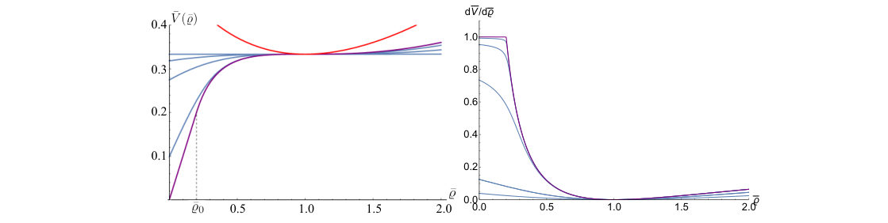
<figcaption class="paper-figure-caption"><b>Fig 1.</b> Figure 1: Wilson-Polchinski parameterization: Plot of the potentials ¯V (¯ϱ) and of ¯V ′(¯ϱ) for some</figcaption>
</figure>
<figure class="paper-figure-card">
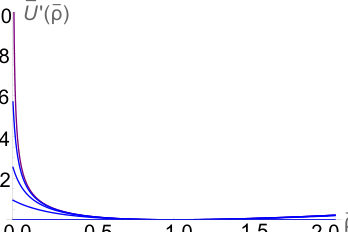
<figcaption class="paper-figure-caption"><b>Fig 2.</b> Figure 2: Wetterich parameterization. Upper left: FP potentials ¯U(¯ϕ) corresponding to the tricrit-</figcaption>
</figure>
<figure class="paper-figure-card">

<figcaption class="paper-figure-caption"><b>Fig 3.</b> Figure 3: N = ∞and d = 3: Construction of the singular Wilson-Polchinski fixed-point potential</figcaption>
</figure>
<figure class="paper-figure-card">

<figcaption class="paper-figure-caption"><b>Fig 4.</b> Figure 4: Plot of the two solutions τ1(α) (orange curve) and τ2(α) (red curve), corresponding to</figcaption>
</figure>
<figure class="paper-figure-card">

<figcaption class="paper-figure-caption"><b>Fig 5.</b> Figure 7: Eigenpertubations corresponding to the non degenerate eigenvalues of the linearized</figcaption>
</figure>
</div>

<p><strong>Summary.</strong> This theoretical paper uses Functional Renormalization Group methods to study mass generation in the tricritical O(N) model. It demonstrates that at a specific fixed point, the generated mass is nonuniversal and depends on UV initial conditions. Crucially, it reveals a discontinuity in the critical exponent as the system crosses into this singular fixed point regime.</p>
<p><strong>Why it may be interesting.</strong> While focused on statistical mechanics, the use of advanced non-perturbative RG techniques (FRG) to study emergent phenomena like dynamical mass generation is highly relevant to understanding quantum field theories underlying many condensed matter systems.</p>
<details>
<summary>Detailed structure</summary>
<p><strong>Main problem.</strong> The study investigates mass generation at a fixed point (FP) in the tricritical O(N) model, specifically addressing how this occurs when standard connections between FPs and scale invariance break down.</p>
<p><strong>Main result.</strong> The generated mass is shown to be nonuniversal, originating from the nonanalytic structure of the effective potential. Furthermore, the critical exponent $\nu$ exhibits a discontinuous jump at the singular BMB fixed point ($\nu=1/2 \to 1/3$).</p>
<p><strong>Method.</strong> The analysis heavily relies on the Functional Renormalization Group (FRG) approach, utilizing Wilsonian flow equations and approximations like the Local Potential Approximation (LPA).</p>
<p><strong>Model / system.</strong> The model is the tricritical O(N) sigma model in three dimensions ($d=3$) analyzed in the large-$N$ limit ($N=\infty$). The system exhibits a line of fixed points parameterized by $\lambda$, terminating at the singular BMB FP.</p>
<p><strong>Key observables.</strong> Critical exponent $\nu$, effective potential $U_{eff}(\phi)$, and the dimensionful physical mass $M_0$.</p>
<p><strong>Important parameters / regimes.</strong> The coupling constant parameter $\lambda$ (or $\tau$), the dimensionality $d=3$, and the large-$N$ limit ($N=\infty$).</p>
<p><strong>Assumptions / limitations.</strong> The analysis relies on the Local Potential Approximation (LPA) for solving the exact flow equation, and in some parts, assumes certain terms become negligible in the $N \to \infty$ limit.</p>
<p><strong>Figures summary.</strong> Figures illustrate potential parameterizations ($\bar{V}$ vs $\bar{
ho}$) showing discontinuities at the BMB FP, and track the evolution of potentials and mass squared over RG time to demonstrate non-universal flow.</p>
<p><strong>Paper structure.</strong> The paper progresses by first establishing the FRG framework for the model, then analyzing the regular line of FPs (BMB line), constructing the singular counterpart, and finally using perturbation theory around the BMB FP to derive the mechanism for mass generation and the jump in critical exponents.</p>
</details>
<details>
<summary>Abstract</summary>
<p>Renormalization group (RG) fixed points are commonly associated with scale invariance and a divergent correlation length. We show that this connection can fail in the tricritical $O(N)$ model in three dimensions in the limit $N\to\infty$. Revisiting the line of fixed points identified by Bardeen, Moshe, and Bander, we use the functional renormalization group to clarify the mechanism leading to mass generation at its singular endpoint (the BMB fixed point). We demonstrate that the generated mass is nonuniversal and originates from the nonanalytic structure of the effective potential. We show that the critical exponent $ν$ which takes the value $ν= 1/2$ along the regular part of the BMB line, that is, for $0 \leq λ< λ_{\rm BMB}$, jumps to $ν= 1/3$ on the singular part of this line with the BMB FP, corresponding to $λ= λ_{\rm BMB}$, being the pivotal point between these two regimes. We also show how its singular potential emerges dynamically along the renormalization flow.</p>
</details>
<p><sub><a href="#top">↑ back to top</a></sub></p>

<p><a id="paper-2606.12284"></a></p>
<h3 id="multipartite-reference-frame-independent-quantum-cryptographic-communication"><a href="http://arxiv.org/abs/2606.12284v1">Multipartite reference-frame-independent quantum cryptographic communication</a></h3>
<p><strong>Authors:</strong> Donghwa Lee, Kyujin Shin, Hyang-Tag Lim, Yosep Kim, Yong-Su Kim<br>
<strong>Type:</strong> both · <strong>Category:</strong> quantum information and computing · <strong>PDF:</strong> <a href="https://arxiv.org/pdf/2606.12284v1">https://arxiv.org/pdf/2606.12284v1</a><br>
<strong>Analysis basis:</strong> full PDF text, analyzed in chunks
<strong>Topic relevance:</strong> <code>quantum optics experiment</code> <strong>3/5</strong> · <code>entanglement &amp; information structure</code> <strong>2/5</strong> · <code>QC/QI experiment</code> <strong>1/5</strong> · <code>interference shaping light</code> <strong>1/5</strong></p>
<div class="figure-strip-hint">↔ Scroll figures horizontally</div>
<div class="paper-figures-scroll">
<figure class="paper-figure-card">

<figcaption class="paper-figure-caption"><b>Fig 1.</b> FIG. 1. The schematic diagram of multiparty quantum cryp- tographic communication using GHZ states. Alice has N- partite GHZ states and distributes it into multiple Bobs through quantum channels. All communication parties, in- cluding Alice, have their reference frame misalignments as differences γi between the initial frame of GHZ state prepa- ration S.</figcaption>
</figure>
<figure class="paper-figure-card">

<figcaption class="paper-figure-caption"><b>Fig 2.</b> FIG. 2. The asymptotic key rates of multiparty RFI quantum cryptographic communications in terms of the global and local depolarizing noise of λg and λl, respectively. As the number of parties N increasing, RN on the global and local depolarizing noise show different trends.</figcaption>
</figure>
<figure class="paper-figure-card">

<figcaption class="paper-figure-caption"><b>Fig 3.</b> FIG. 3. Experimental setups of the 4-parties RFI quantum cryptographic communication using GHZ state. M: mirror, DM: dichroic mirror, H: half waveplate, Q: quarter waveplate, PBS: polarizing beamsplitter, D: detector, SNSPD: superconducting nanowire single photon detector.</figcaption>
</figure>
<figure class="paper-figure-card">

<figcaption class="paper-figure-caption"><b>Fig 4.</b> FIG. 4. The experimental results of the 4-parties RFI quan- tum cryptographic communication using GHZ state. (a) cor- responds to Case a where {0, 0, 0, γD}. (b) corresponds to Case b where {γA, π</figcaption>
</figure>
</div>

<p><strong>Summary.</strong> This paper theoretically and experimentally investigates Reference-Frame-Independent (RFI) Quantum Key Distribution using GHZ states across multiple parties. It generalizes the security analysis to N-parties, showing that while noise models affect robustness differently, the final secret key rate remains invariant under reference frame rotations. The work validates this concept with a four-party experimental demonstration.</p>
<p><strong>Why it may be interesting.</strong> This work directly addresses robustness in quantum communication protocols, which is crucial for scaling up quantum networks. The mathematical generalization of security parameters to $N$ parties provides theoretical tools for future multi-user quantum internet applications.</p>
<details>
<summary>Detailed structure</summary>
<p><strong>Main problem.</strong> Multipartite quantum cryptographic communication is susceptible to errors caused by reference frame mismatches among participating parties, which complicates key distribution as the number of users increases.</p>
<p><strong>Main result.</strong> The authors derived a generalized security parameter $C_N$ and demonstrated that while some metrics are sensitive to rotation, the asymptotic secret key rate ($R_N$) remains invariant under arbitrary reference frame rotations for N-party GHZ states.</p>
<p><strong>Method.</strong> The study combines theoretical derivation of key rates based on mutual information with experimental validation using four-photon GHZ states subjected to controlled reference frame rotations.</p>
<p><strong>Model / system.</strong> The system uses Greenberger-Horne-Zeilinger (GHZ) states distributed among $N$ parties. The analysis models noise using global and local depolarizing channels, while the experiment utilizes photon sources based on PPKTP crystals.</p>
<p><strong>Key observables.</strong> Multiparty RFI parameter ($C_N$), Quantum Bit Error Rates ($Q_Z$, $Q_X$), and the asymptotic secret key rate ($R_N$).</p>
<p><strong>Important parameters / regimes.</strong> Number of parties ($N$), global/local depolarizing noise strengths ($\lambda_g, \lambda_l$), and reference frame rotation angles ($\gamma_i$).</p>
<p><strong>Assumptions / limitations.</strong> The analysis assumes the ability to estimate noise parameters from measurement statistics in the X and Y bases; experimentally, it relies on generating high-fidelity GHZ states.</p>
<p><strong>Figures summary.</strong> Figure 1 illustrates the setup with reference frame misalignments. Figure 2 compares key rate robustness under global vs. local noise for varying N. Figure 4 shows measured expectation values of Pauli strings and the invariance of $C_4$ and $R_4$ across different controlled rotations.</p>
<p><strong>Paper structure.</strong> The paper first introduces the problem of reference-frame mismatch in multipartite QKD, generalizes the security parameter to $N$ parties ($C_N$), derives the key rate formula under various noise models (global/local), and concludes with a proof-of-principle experiment demonstrating four-party RFI communication.</p>
</details>
<details>
<summary>Abstract</summary>
<p>Reference frame mismatch among communication parties introduces errors in quantum cryptographic protocols. As the number of participants increases, aligning reference frames becomes increasingly difficult, complicating multipartite quantum cryptographic implementations. Here, we theoretically and experimentally investigate multipartite reference-frame-independent (RFI) quantum cryptographic communication using Greenberger-Horne-Zeilinger (GHZ) states. We generalize the bipartite RFI security parameter $C$ to an $N$-party parameter $C_N$ and derive the asymptotic secret key rate expressed solely in terms of experimentally accessible quantities. We analyze the key rate under global and local depolarizing noise models and find that increasing the number of parties $N$ enhances robustness against global depolarizing noise while increasing vulnerability to local channel noise. We also present a proof-of-principle experimental demonstration of four-party RFI quantum cryptographic communication using four-photon GHZ states, confirming the reference-frame invariance of both the $C_4$ parameter and the secret key rate under various reference frame rotations.</p>
</details>
<p><sub><a href="#top">↑ back to top</a></sub></p>

<p><a id="paper-2606.12168"></a></p>
<h3 id="fabricating-fiber-cavity-mirror-substrates-compatible-with-high-coupling-efficiency"><a href="http://arxiv.org/abs/2606.12168v1">Fabricating fiber cavity mirror substrates compatible with high coupling efficiency</a></h3>
<p><strong>Authors:</strong> Michael Caouette-Mansour, Thomas J. Clark, Valeria Mosso Tsedilkina, Jack C. Sankey<br>
<strong>Type:</strong> experiment · <strong>Category:</strong> other · <strong>PDF:</strong> <a href="https://arxiv.org/pdf/2606.12168v1">https://arxiv.org/pdf/2606.12168v1</a><br>
<strong>Analysis basis:</strong> full PDF text, analyzed in chunks
<strong>Topic relevance:</strong> <code>quantum optics experiment</code> <strong>3/5</strong> · <code>correlated cavity matter</code> <strong>1/5</strong> · <code>interference shaping light</code> <strong>1/5</strong> · <code>quantum measurements</code> <strong>1/5</strong></p>
<div class="figure-strip-hint">↔ Scroll figures horizontally</div>
<div class="paper-figures-scroll">
<figure class="paper-figure-card">

<figcaption class="paper-figure-caption"><b>Fig 1.</b> FIG. 1. Coupling efficiency and reflection coefficient (a) Diagrams showing the geometry for (left) an optimal cav- ity mode (field ⃗Ecav, red intensity profile normal to the sur- face) transmitting into a fiber core mode ( ⃗Eout) with mode matching parameter ηT , and (right) an input core mode ( ⃗Ein) reflecting back into the core mode ( ⃗Eout) via the induced “drive” field ⃗Edrive at the surface. (b,c) Relationship between the mode mismatch parameter 1 −ηT (red) and the reflec- tion matching parameter ηR (blue) as a function of (b) cleave angle θ for the simple case of a flat surface (see inset) and (c) radius of curvature ρ for the simple case of the dimple perfectly centered (see...</figcaption>
</figure>
<figure class="paper-figure-card">

<figcaption class="paper-figure-caption"><b>Fig 2.</b> FIG. 2. Experimental setup (a) Apparatus for ablating the fiber tip and estimating the achievable coupling efficiency. The reflectometry measurement uses light from a superluminescent light-emitting diode (SLED), which has a coherence length below ∼7 µm to eliminate standing-wave interference. The first photodiode (collecting power P1) monitors power fluctuations, and the second (power P2) measures light returning from the fiber tip. The end fiber of this reflectometer is spliced into a fiber spool from which the other end is mounted on a translation stage to move between ablation and profilometry. (b) Measured reflection ηR during ablation. The red fill indicates when the CO2 laser is on,...</figcaption>
</figure>
<figure class="paper-figure-card">

<figcaption class="paper-figure-caption"><b>Fig 3.</b> FIG. 3. Measured Fibers and Expected Coupling (a) Measured (smaller) radius of curvature (ρ) and back reflection (ηR) on 138 fibers before (blue markers) and after (orange markers) ablation. The violet curve is the theoretical limit for a perfect core alignment (θ = 0). The black lines are contours of constant mode coupling (ηT ) with the indicated values (thin gray lines are half-values in between). The blue triangles indicate fibers with ρ ≥4000µm. (b) ηR as a function of the mode coupling (ηT ) for the same fibers with corresponding marginalized histograms on each axis. The solid violet line is the same limit line as in (a) with the marked values of ρ. The dashed purple line is the limit...</figcaption>
</figure>
<figure class="paper-figure-card">

<figcaption class="paper-figure-caption"><b>Fig 4.</b> FIG. 4. Bayesian calibration of reflectometer (a) His- togram of 137 measured post-cleave values of α ≡P2/P1. The solid curve is the likelihood modeled by Eq. B2 (nor- malized) with the parameters taken as the most likely val- ues (αmax = 0.1534, ¯θ = 0◦, σθ = 1.43◦) sampled in (b) and (c). Uncertainty bars show the square root of counts for ref- erence (not used in the analysis). (b) 2D histogram of the Monte-Carlo-sampled “nuisance parameters” ¯θ and σθ. Con- tour lines enclose the 68% and 95% confidence intervals. The marker indicates the values used in (a). (c) Histogram of the calibration parameter A = ηR,max/αmax, with αmax sampled together with ¯θ and σθ as shown in (b). The red...</figcaption>
</figure>
</div>

<p><strong>Summary.</strong> This paper presents a novel, non-destructive technique using reflectometry to characterize fiber mirror substrates intended for optical cavities. By measuring back-reflection ($\eta_R$) during fabrication, researchers can accurately pre-select fibers that maintain high mode matching efficiency ($\eta_T > 95\%$). This significantly streamlines the experimental process by reducing reliance on costly post-fabrication characterization.</p>
<p><strong>Why it may be interesting.</strong> This work is highly relevant to quantum optics and open quantum systems because it directly addresses the engineering bottleneck—the coupling efficiency—required for building high-finesse cavities necessary for quantum memory or single-photon sources.</p>
<details>
<summary>Detailed structure</summary>
<p><strong>Main problem.</strong> The primary challenge is achieving high collection efficiency ($\eta_T$) in fiber optical cavities by minimizing losses caused by mode mismatch between the cavity mode and the fiber core at the mirror surface.</p>
<p><strong>Main result.</strong> A simple, non-invasive technique using <em>in situ</em> reflectometry can pre-select viable fiber mirror substrates with high coupling efficiencies ($>95\%$), greatly improving experimental yield before expensive coating steps.</p>
<p><strong>Method.</strong> The authors developed a methodology combining cleaving and $    ext{CO}_2$ laser ablation on fiber tips, characterizing the resulting surface quality using continuous back-reflection measurements ($\eta_R$) via Superluminescent Diodes (SLEDs).</p>
<p><strong>Model / system.</strong> The system involves an open Fabry-Perot optical cavity formed by cleaved and ablated single-mode fiber ends. The theoretical analysis models the coupling efficiency based on surface imperfections like tilt angle ($  heta$) and radius of curvature ($
ho$).</p>
<p><strong>Key observables.</strong> Collection efficiency ($\eta_T$), measured back-reflection coefficient ($\eta_R$), surface parameters (tilt $    heta$, radius $
ho$), and RMS roughness.</p>
<p><strong>Important parameters / regimes.</strong> Target collection efficiency ($\eta_T > 0.95$); Wavelength of operation (1550 nm).</p>
<p><strong>Assumptions / limitations.</strong> The analysis relies on approximations for small surface gradients, and the reflectometry measurement is assumed to provide a tight constraint on $\eta_T$, potentially bypassing the need for profilometry measurements of tilt angle.</p>
<p><strong>Figures summary.</strong> Figures illustrate the geometry relating coupling efficiency and reflection coefficients; one figure shows the experimental setup tracking $\eta_R$ evolution during ablation alongside AFM roughness scans; another plots measured $\eta_R$ versus theoretical parameters ($
ho$, $  heta$) to constrain $\eta_T$.</p>
<p><strong>Paper structure.</strong> The paper first establishes the physical limitation (mode mismatch) and then introduces the novel experimental technique: using reflectometry <em>in situ</em> during fabrication. Theoretical derivations are presented in appendices, culminating in a Bayesian analysis framework to calibrate the measured reflection ($\alpha$) against theoretical maximums ($\eta_{R,max}$).</p>
</details>
<details>
<summary>Abstract</summary>
<p>Fiber optical cavities offer small mode volumes and correspondingly strong light-matter interactions in an open Fabry-Perot geometry. However, existing fabrication techniques do not reliably produce substrates with surface profiles amenable to high mode matching between the cavity mode and fiber core, thereby limiting the achievable collection efficiency. Here we present a technique to fabricate fiber mirror substrates while using $\textit{in situ}$ reflectometry to constrain the achievable mode matching prior to coating. By measuring the back-reflection from freshly cleaved fiber tips, we pre-select 138 fibers compatible with 96.5-99.5% mode matching, and after a single CO$_2$ laser ablation pulse, these fibers remained compatible with 95.3-99.2\%. This simple technique provides rapid feedback during each stage of substrate fabrication, greatly enhancing the yield of viable fiber mirror substrates prior to (expensive) coating runs.</p>
</details>
<p><sub><a href="#top">↑ back to top</a></sub></p>

<p><a id="paper-2606.11338"></a></p>
<h3 id="universal-critical-behavior-in-ideal-bose-einstein-condensation"><a href="http://arxiv.org/abs/2606.11338v1">Universal critical behavior in ideal Bose-Einstein condensation</a></h3>
<p><strong>Authors:</strong> Arturo Camacho-Guardian, Leon Kleebank, Frank Vewinger, Martin Weitz, Julian Schmitt, Rosario Paredes, Victor Romero-Rochín<br>
<strong>Type:</strong> theory · <strong>Category:</strong> quantum gases · <strong>PDF:</strong> <a href="https://arxiv.org/pdf/2606.11338v1">https://arxiv.org/pdf/2606.11338v1</a><br>
<strong>Analysis basis:</strong> full PDF text, analyzed in chunks
<strong>Topic relevance:</strong> <code>analog quantum simulation</code> <strong>3/5</strong> · <code>correlated cavity matter</code> <strong>1/5</strong> · <code>driven-dissipative phase transition</code> <strong>1/5</strong> · <code>non-equilibrium universality</code> <strong>1/5</strong></p>
<div class="figure-strip-hint">↔ Scroll figures horizontally</div>
<div class="paper-figures-scroll">
<figure class="paper-figure-card">

<figcaption class="paper-figure-caption"><b>Fig 1.</b> FIG. 1. Classification of universal BEC critical behavior as a function of the low-energy scaling behavior of the density of states ρ(ϵ) ∼ϵσ, quantified by σ. Black dots indicate example systems. For σ ≤0 (e.g., Bose gas in 1D or 2D box traps), BEC does not occur at finite temperature (yellow box). For 0 &lt; σ &lt; 1 (Class I, e.g., 3D box), the thermody- namic susceptibilities diverge (blue). The marginal case σ = 1 [Class II, e.g., 2D harmonic oscillator (HO) trap] features log- arithmic corrections to the divergent scaling (gray). For σ &gt; 1 (Class III, e.g. realized in a 3D harmonic trap), only the cor- relation length diverges with the exponent νT = 1/2, while the isothermal compressibility...</figcaption>
</figure>
</div>

<p><strong>Summary.</strong> The paper develops a unified theory for critical phenomena in ideal Bose-Einstein condensation. It shows that the nature of the phase transition—and its associated critical exponents—is entirely determined by the low-energy scaling exponent ($\sigma$) of the density of states, which is set by the confining potential's geometry. This classification framework applies broadly to various quantum bosonic systems.</p>
<p><strong>Why it may be interesting.</strong> This work provides fundamental scaling laws that unify the understanding of phase transitions across different physical realizations (atoms, photons) by mapping them onto a single parameter ($\sigma$) derived from geometry.</p>
<details>
<summary>Detailed structure</summary>
<p><strong>Main problem.</strong> To provide a unified framework for classifying the critical behavior of ideal Bose-Einstein condensation (BEC) based on its thermodynamic singularities.</p>
<p><strong>Main result.</strong> The critical behavior is classified into three regimes ($\sigma < 1, \sigma = 1, \sigma > 1$) determined solely by the low-energy scaling exponent ($\sigma$) of the single-particle density of states.</p>
<p><strong>Method.</strong> Analysis involves deriving thermodynamic properties using the grand potential and analyzing asymptotic forms of correlation functions near the critical point.</p>
<p><strong>Model / system.</strong> The system is an ideal Bose gas, applicable to various condensates (atomic, photonic, polaritonic) confined by potentials $V(\mathbf{r})$. The low-energy physics is governed by the density of states $
ho(\epsilon) \sim \epsilon^\sigma$.</p>
<p><strong>Key observables.</strong> Critical exponents ($\gamma_T, 
u_T, \eta_T$), isothermal compressibility ($\kappa_T$), and correlation length ($\xi$).</p>
<p><strong>Important parameters / regimes.</strong> The DOS scaling exponent $\sigma$, which depends on dimensionality ($d$) and confinement potential details (e.g., box vs. harmonic trap).</p>
<p><strong>Assumptions / limitations.</strong> The analysis relies on the Local Density Approximation (LDA) for inhomogeneous systems, and semiclassical methods are used to determine the low-energy DOS.</p>
<p><strong>Figures summary.</strong> Figures summarize the classification into three universality classes based on $\sigma$, showing specific scaling laws for different trap geometries like box traps ($\sigma = d/2 - 1$) and Harmonic Oscillator (HO) traps ($\sigma = d-1$).</p>
<p><strong>Paper structure.</strong> The paper progresses from establishing the general framework using the DOS exponent $\sigma$ to deriving explicit critical exponents for various thermodynamic quantities, culminating in a comprehensive classification table.</p>
</details>
<details>
<summary>Abstract</summary>
<p>Ideal Bose-Einstein condensation (BEC) remains a paradigmatic example of a continuous phase transition and a cornerstone for understanding quantum degenerate bosonic matter. We demonstrate that critical behavior of the ideal Bose gas near the BEC phase transition falls into three distinct classes, determined exclusively by the low-energy scaling of the density of states. Depending on its scaling exponent, which is controlled by dimensionality and confinement, the transition displays either the usual algebraic divergences of thermodynamic susceptibilities, divergent behavior with marginal logarithmic corrections, or a more subtle form of criticality, where only the correlation length diverges. Our work provides a unified framework for criticality in noninteracting bosonic systems. This classification applies broadly to atomic, photonic, polaritonic, and magnonic condensates, where dimensionality, confinement, and spectral engineering can strongly reshape the density of states.</p>
</details>
<p><sub><a href="#top">↑ back to top</a></sub></p>

<p><a id="paper-2606.11343"></a></p>
<h3 id="fisher-geometry-reshapes-the-effect-of-incompatibility-in-multiparameter-quantum-estimation"><a href="http://arxiv.org/abs/2606.11343v1">Fisher geometry reshapes the effect of incompatibility in multiparameter quantum estimation</a></h3>
<p><strong>Authors:</strong> Jiayu He, Matteo G. A. Paris<br>
<strong>Type:</strong> theory · <strong>Category:</strong> quantum information and computing · <strong>PDF:</strong> <a href="https://arxiv.org/pdf/2606.11343v1">https://arxiv.org/pdf/2606.11343v1</a><br>
<strong>Analysis basis:</strong> full PDF text, analyzed in chunks
<strong>Topic relevance:</strong> <code>quantum measurements</code> <strong>3/5</strong> · <code>entanglement &amp; information structure</code> <strong>1/5</strong> · <code>measurement-induced transitions</code> <strong>1/5</strong></p>
<div class="figure-strip-hint">↔ Scroll figures horizontally</div>
<div class="paper-figures-scroll">
<figure class="paper-figure-card">

<figcaption class="paper-figure-caption"><b>Fig 1.</b> Figure 1. Numerical diagnosis of the incompatibility contribution in the three-parameter qutrit model.</figcaption>
</figure>
<figure class="paper-figure-card">

<figcaption class="paper-figure-caption"><b>Fig 2.</b> Figure 2. Variation of G along an approximately fixed-sloppiness slice in the (t, θ) control plane. The probe</figcaption>
</figure>
</div>

<p><strong>Summary.</strong> This paper develops a refined understanding of precision limits in multiparameter quantum estimation by quantifying the joint impact of parameter sensitivity (sloppiness) and measurement non-commutativity (incompatibility). It introduces a key diagnostic factor, $G$, showing that how incompatibility is distributed relative to the system's natural geometry dictates the final achievable precision bound. This moves beyond simple scalar measures to provide a deeper geometric understanding of quantum sensing limitations.</p>
<p><strong>Why it may be interesting.</strong> This work provides advanced tools to quantify resource limitations in quantum sensing beyond simple measures like total Fisher information or total incompatibility strength. The focus on geometric alignment makes it highly relevant for designing optimal measurement strategies.</p>
<details>
<summary>Detailed structure</summary>
<p><strong>Main problem.</strong> The paper addresses how two fundamental obstacles—sloppiness (QFIM anisotropy) and incompatibility (non-commutativity of optimal measurements)—jointly limit precision in multiparameter quantum estimation.</p>
<p><strong>Main result.</strong> The distribution of incompatibility relative to the Fisher eigenbasis is a crucial diagnostic, showing that concentrating incompatibility can reduce the cost if the Fisher geometry allows for reshaping. The penalty depends on this geometric alignment factor $G$, not just the total incompatibility strength.</p>
<p><strong>Method.</strong> The authors derive explicit upper bounds and analyze the structure of the trade-off bound by introducing dimensionless quantities like $G(\mathbf{F})$ that measure the alignment between incompatibility and QFIM eigenvalues.</p>
<p><strong>Model / system.</strong> The analysis is performed on general quantum statistical models, using both pure-state (QGT) and mixed-state formulations involving the Symmetric Logarithmic Derivative (SLD). A concrete test case uses a qutrit SU(2) encoding for three parameters $(B, 	heta, \phi)$.</p>
<p><strong>Key observables.</strong> Quantum Fisher Information Matrix ($Q_{\mu
u}$), Uhlmann Curvature ($U_{\mu
u}$), Sloppiness measure ($s = 1/\det Q$), and the dimensionless matching factor $G(\mathbf{F})$.</p>
<p><strong>Important parameters / regimes.</strong> The number of parameters ($n=2, 3$, general $n \ge 4$) and the relative strength/placement of incompatibility components.</p>
<p><strong>Assumptions / limitations.</strong> The analysis relies on deriving explicit upper bounds for the Holevo bound and assumes certain structural properties (e.g., diagonalizability) when simplifying the cost function in low dimensions.</p>
<p><strong>Figures summary.</strong> Figures numerically confirm that the penalty term $C_T - C_S$ depends critically on the matching factor $G$, demonstrating that increasing total incompatibility ($\sqrt{c}$) does not guarantee a higher cost if $G$ is small.</p>
<p><strong>Paper structure.</strong> The paper systematically analyzes the joint impact of sloppiness and incompatibility, deriving bounds using geometric tensors (QGT/SLD), introducing the diagnostic factor $G(\mathbf{F})$, proving structural results for low dimensions ($n=2, 3$), and finally testing these findings numerically on a qutrit model.</p>
</details>
<details>
<summary>Abstract</summary>
<p>Multiparameter quantum estimation faces two fundamental obstacles: sloppiness, i.e., anisotropy of the quantum Fisher information matrix (QFIM) that renders some parameter directions insensitive, and incompatibility, the non-commutativity of optimal measurements for different parameters. The trade-off bound $C_T$ captures their joint impact on precision, but it has remained unclear how the distribution of incompatibility across parameter planes affects its overall cost. Here we separate the total amount of incompatibility from its location. We introduce a dimensionless quantity $G_n^{(F)}$ that measures the alignment between the incompatibility distribution and the eigenvalues of the QFIM, and show how the Frobenius scale of the incompatibility contribution factorizes. We obtain a bound and prove the incompatibility cost lies between this bound and a rank-dependent multiple thereof. We also prove that at fixed sloppiness, or equivalently fixed Fisher volume, concentrating incompatibility into a single parameter plane reduces the optimized trade-off cost because the Fisher geometry can then be reshaped to allocate more Fisher area to that plane. A qutrit $SU(2)$ encoding numerically confirms that states with larger incompatibility strength can nevertheless incur a smaller cost if the matching factor $G$ is sufficiently small. Our results establish that the distribution of incompatibility relative to the Fisher eigenbasis is a central diagnostic for multiparameter estimation, beyond the total incompatibility strength.</p>
</details>
<p><sub><a href="#top">↑ back to top</a></sub></p>

<p><a id="paper-2606.11557"></a></p>
<h3 id="emergent-mirror-symmetry-in-the-optimization-of-the-central-spin-quantum-battery"><a href="http://arxiv.org/abs/2606.11557v1">Emergent mirror symmetry in the optimization of the central-spin quantum battery</a></h3>
<p><strong>Authors:</strong> Hui-Yu Yang, Kun Zhang, Xiao-Hui Wang, Hai-Long Shi<br>
<strong>Type:</strong> theory · <strong>Category:</strong> statistical mechanics · <strong>PDF:</strong> <a href="https://arxiv.org/pdf/2606.11557v1">https://arxiv.org/pdf/2606.11557v1</a><br>
<strong>Analysis basis:</strong> full PDF text, analyzed in chunks
<strong>Topic relevance:</strong> <code>non-equilibrium dynamics</code> <strong>2/5</strong> · <code>analog quantum simulation</code> <strong>1/5</strong> · <code>correlated / nonlocal dissipation</code> <strong>1/5</strong> · <code>driven-dissipative phase transition</code> <strong>1/5</strong> · <code>exotic spin models in light-matter</code> <strong>1/5</strong> · <code>methods for driven-dissipative</code> <strong>1/5</strong> · <code>non-equilibrium universality</code> <strong>1/5</strong></p>
<div class="figure-strip-hint">↔ Scroll figures horizontally</div>
<div class="paper-figures-scroll">
<figure class="paper-figure-card">

<figcaption class="paper-figure-caption"><b>Fig 1.</b> FIG. 2. Time evolution of the normalized stored-energy contribution associated with the fully charged battery state, ε(t) = ⟨Nb|ρ(t)|Nb⟩, for different initial charger excitation numbers n. At the optimal point n = n∗, the transfer to the fully charged state is the most efficient, leading to the largest and fastest buildup of ε(t). Here n∗= (Nb+Nc)/2 for the even case considered. The parameters are Nb = 5, Nc = 25, and A = 1.</figcaption>
</figure>
<figure class="paper-figure-card">

<figcaption class="paper-figure-caption"><b>Fig 2.</b> FIG. 1. Spatial profile of the effective hopping amplitudes uj for different initial charger excitation numbers n. At the optimal point n = n∗, the profile is exactly mirror symmetric with respect to the chain center, whereas away from this point it becomes asymmetric. Here n∗= (Nb + Nc)/2 for the even case considered. The parame- ters are Nb = 30, Nc = 90, and A = 1.</figcaption>
</figure>
<figure class="paper-figure-card">

<figcaption class="paper-figure-caption"><b>Fig 3.</b> FIG. 4. Scaling of the charging time τ with the charger size Nc. Red circles denote the numerical results for the symmetry-selected opti- mal protocol n = n∗, blue circles denote those for the fully excited charger baseline n = Nc, and the red solid line is the 1/Nc scaling guide. The optimal protocol follows τ ∝1/Nc, whereas the fully excited charger baseline does not. Here n∗= (Nb + Nc)/2 for the even case considered. The parameters are Nb = 5 and A = 1.</figcaption>
</figure>
<figure class="paper-figure-card">

<figcaption class="paper-figure-caption"><b>Fig 4.</b> FIG. 3. Charging performance as a function of the initial charger excitation number n. The maximum stored energy per battery cell E(τ)/Nb in (a) and the corresponding average charging power ¯P(τ) in (b) are both maximized at the common optimal point n = n∗, marked by the vertical dashed line. Here n∗= (Nb + Nc)/2 for the even case considered. The parameters are Nb = 5, Nc = 25, and A = 1.</figcaption>
</figure>
<figure class="paper-figure-card">

<figcaption class="paper-figure-caption"><b>Fig 5.</b> Figure 4 confirms this prediction by comparing the symmetry-selected protocol with the fully polarized bench- mark. The red circles, corresponding to the optimal Dicke- state protocol at n = n∗, are in excellent agreement with the 1/Nc reference scaling marked by the red solid line. In contrast, the blue circles, corresponding to the fully polar- ized charger scheme n = Nc, decrease much more slowly and clearly deviate from the 1/Nc behavior. This compari- son demonstrates that the reduction of the charging time is not a trivial consequence of enlarging the charger, but origi- nates from the structure of the symmetry-selected optimal ini- tial state.</figcaption>
</figure>
</div>

<p><strong>Summary.</strong> This paper investigates the optimization of energy storage in a central-spin quantum battery model. By analyzing two structural indicators related to charging dynamics, the authors find that maximum efficiency is achieved when the system's effective Hamiltonian becomes exactly mirror symmetric. This establishes emergent symmetry as a key organizing principle for maximizing performance in interacting quantum systems.</p>
<p><strong>Why it may be interesting.</strong> This work connects abstract mathematical concepts (emergent symmetry) directly to measurable physical quantities (charging power/energy), providing a powerful theoretical tool for designing and understanding optimal operation regimes in complex quantum many-body systems relevant to AMO physics.</p>
<details>
<summary>Detailed structure</summary>
<p><strong>Main problem.</strong> The research aims to optimize the charging efficiency of a quantum battery by identifying structural indicators that govern energy storage dynamics.</p>
<p><strong>Main result.</strong> Joint optimization of two structural indicators ($\Omega(n)$ and $\Lambda(n)$) occurs at an initial charger excitation number ($n^*$) where the effective charging Hamiltonian exhibits exact mirror symmetry. This emergent symmetry is shown to be a useful principle for maximizing charging performance.</p>
<p><strong>Method.</strong> The authors derived upper bounds on average charging power and stored energy using structural indicators related to hopping profiles, followed by optimization techniques (AM-GM inequality) to find the optimal initial state.</p>
<p><strong>Model / system.</strong> The system is a central-spin quantum battery model consisting of $N_b$ central spins coupled to $N_c$ bath spins. The dynamics are analyzed within an invariant subspace defined by the charger's Dicke state sector, governed by a specific interaction Hamiltonian.</p>
<p><strong>Key observables.</strong> Average charging power ($ar{P}(	au)$), stored energy ($E(	au)$), and two structural indicators: $\Omega(n)$ (upper bound on power) and $\Lambda(n)$ (stored energy buildup characterization).</p>
<p><strong>Important parameters / regimes.</strong> The optimal excitation number $n^*$, which is found to be near $(N_b + N_c)/2$. The analysis also considers the large $N_c$ limit for scaling laws.</p>
<p><strong>Assumptions / limitations.</strong> The analysis relies on bounding techniques (Hölder, AM-GM) and approximates the optimal Dicke state dynamics using product initial states like spin coherent states.</p>
<p><strong>Figures summary.</strong> Figures illustrate that both stored energy and average power are maximized at $n^*$, confirming the physical relevance of the symmetry selection. Figure 4 specifically shows the scaling of the optimal charging time ($    au \propto 1/N_c$).</p>
<p><strong>Paper structure.</strong> The paper first defines the quantum battery model and its associated structural indicators. It then mathematically derives upper bounds for performance metrics using these indicators. The core is the optimization step, showing that maximizing both indicators simultaneously selects $n^*$, which in turn enforces mirror symmetry on the effective Hamiltonian.</p>
</details>
<details>
<summary>Abstract</summary>
<p>Quantum batteries provide a useful setting for exploring nonequilibrium many-body effects in energy storage. Here we investigate the optimization of a quantum battery based on the central-spin model. We identify two complementary structural indicators associated with the effective charging dynamics: one yields an upper bound on the average charging power, while the other characterizes the buildup of stored energy. We show that these two indicators are jointly optimized at a distinguished initial charger excitation number, which selects a particular Dicke sector of the model. At this common optimal point, the effective charging Hamiltonian becomes exactly mirror symmetric, suggesting mirror symmetry as a useful structural indicator for optimizing quantum batteries. We further show that the corresponding optimal dynamics can be closely approximated by product initial states, in particular by spin coherent states whose excitation-number distribution is centered at the symmetry-selected point. Our results establish a direct connection between charging performance, optimal-state structure, and emergent symmetry in the central-spin quantum battery, and suggest symmetry as a useful organizing principle for efficient charging in interacting many-body quantum systems.</p>
</details>
<p><sub><a href="#top">↑ back to top</a></sub></p>

<p><a id="paper-2606.11438"></a></p>
<h3 id="isotropic-random-walks-and-brownian-diffusion-on-complex-projective-space"><a href="http://arxiv.org/abs/2606.11438v1">Isotropic random walks and Brownian diffusion on complex projective space</a></h3>
<p><strong>Authors:</strong> Gyula I. Tóth<br>
<strong>Type:</strong> theory · <strong>Category:</strong> quantum information and computing · <strong>PDF:</strong> <a href="https://arxiv.org/pdf/2606.11438v1">https://arxiv.org/pdf/2606.11438v1</a><br>
<strong>Analysis basis:</strong> full PDF text, analyzed in chunks
<strong>Topic relevance:</strong> <code>entanglement &amp; information structure</code> <strong>2/5</strong> · <code>non-equilibrium dynamics</code> <strong>2/5</strong> · <code>correlated / nonlocal dissipation</code> <strong>1/5</strong> · <code>driven-dissipative phase transition</code> <strong>1/5</strong> · <code>methods for driven-dissipative</code> <strong>1/5</strong> · <code>non-equilibrium universality</code> <strong>1/5</strong></p>
<div class="figure-strip-hint">↔ Scroll figures horizontally</div>
<div class="paper-figures-scroll">
<figure class="paper-figure-card">

<figcaption class="paper-figure-caption"><b>Fig 1.</b> Low-resolution page preview, page 2</figcaption>
</figure>
<figure class="paper-figure-card">

<figcaption class="paper-figure-caption"><b>Fig 2.</b> Low-resolution page preview, page 3</figcaption>
</figure>
<figure class="paper-figure-card">

<figcaption class="paper-figure-caption"><b>Fig 3.</b> Low-resolution page preview, page 4</figcaption>
</figure>
<figure class="paper-figure-card">

<figcaption class="paper-figure-caption"><b>Fig 4.</b> Low-resolution page preview, page 5</figcaption>
</figure>
<figure class="paper-figure-card">

<figcaption class="paper-figure-caption"><b>Fig 5.</b> Low-resolution page preview, page 6</figcaption>
</figure>
</div>

<p><strong>Summary.</strong> The paper introduces an isotropic random walk model on the complex projective space to study quantum state evolution geometrically. By analyzing this process, it derives explicit formulas for fidelity decay and calculates the mean time required to reach a target state. This framework offers a powerful, solvable reference model for understanding decoherence dynamics in high-dimensional quantum systems.</p>
<p><strong>Why it may be interesting.</strong> This work provides powerful geometric tools—solvable stochastic processes on curved manifolds—to analyze fundamental concepts in quantum information like scrambling and decoherence without needing specific Hamiltonian details. The dimension-dependent divergence of $m^*$ is particularly insightful for understanding state preparation difficulty.</p>
<details>
<summary>Detailed structure</summary>
<p><strong>Main problem.</strong> To develop an analytically tractable stochastic-geometric framework for understanding quantum state space exploration, particularly in the context of decoherence.</p>
<p><strong>Main result.</strong> The isotropic random walk on complex projective space provides a solvable model that reproduces Haar-random fidelity statistics and yields analytical expressions for first-passage times. The mean time to reach high-fidelity states diverges strongly with dimension due to geometric concentration effects.</p>
<p><strong>Method.</strong> The analysis combines harmonic analysis on compact rank-one symmetric spaces with the study of random walks, which are shown to converge to Brownian diffusion governed by the Fubini–Study Laplace–Beltrami operator in the short/long time limits.</p>
<p><strong>Model / system.</strong> The system is modeled as an isotropic random walk on the complex projective space ($\mathbb{CP}^{n-1}$), which represents the pure quantum state space. This approach serves as a geometric reference model for open quantum evolution, bypassing the need to specify a microscopic Lindblad generator.</p>
<p><strong>Key observables.</strong> Transition kernels, fidelity statistics ($F$), mean first passage time ($m^*$), and expectation values of geometric observables related to the Fubini–Study metric.</p>
<p><strong>Important parameters / regimes.</strong> The dimension $n$ (related to the Hilbert space dimension), the number of steps $m$, and the target fidelity $F^*$ are crucial parameters governing convergence rates and divergence behavior.</p>
<p><strong>Assumptions / limitations.</strong> The model assumes an isotropic, Markovian evolution on $\mathbb{CP}^{n-1}$ and relies on approximating the random walk by Brownian diffusion in certain limits to solve for first passage times.</p>
<p><strong>Paper structure.</strong> The paper establishes the general framework using harmonic analysis on symmetric spaces, derives transition probabilities via Jacobi polynomials, analyzes the short-time convergence to heat kernel/Brownian motion, and finally solves the mean first passage time problem by reducing it to a boundary value problem involving the killed Laplacian.</p>
</details>
<details>
<summary>Abstract</summary>
<p>We show that isotropic random walks on the complex projective space provide a canonical and analytically tractable stochastic-geometric framework for the exploration of quantum-state space. The approach combines harmonic analysis on compact rank-one symmetric spaces with stochastic pure-state evolution and yields explicit analytical expressions for transition kernels, fidelity statistics, and geometric observables associated with the Fubini--Study metric. In particular, the framework provides a solvable reference model for isotropic depolarization and Haar equilibration, reproducing Haar-random fidelity statistics and the invariant measure on projective Hilbert space without specifying a microscopic Lindblad generator. In the short-time regime, the stochastic evolution converges to Brownian diffusion generated by the Fubini--Study Laplace--Beltrami operator, while the long-time limit exhibits concentration-of-measure behaviour characteristic of high-dimensional random quantum states. We further derive analytical and asymptotic results for the first-passage-time problem, including closed-form expressions in the Brownian limit for the mean first passage time and the long-time tail of the first-passage-time distribution. For high-fidelity target states, the mean first passage time exhibits a strong dimension-dependent divergence originating from the concentration properties of the Fubini--Study geometry.</p>
</details>
<p><sub><a href="#top">↑ back to top</a></sub></p>

<p><a id="paper-2606.11369"></a></p>
<h3 id="mean-field-limits-for-stochastic-particle-systems-on-dense-graphs"><a href="http://arxiv.org/abs/2606.11369v1">Mean-field limits for stochastic particle systems on dense graphs</a></h3>
<p><strong>Authors:</strong> Angeliki Koutsimpela, Elena Magnanini<br>
<strong>Type:</strong> theory · <strong>Category:</strong> statistical mechanics · <strong>PDF:</strong> <a href="https://arxiv.org/pdf/2606.11369v1">https://arxiv.org/pdf/2606.11369v1</a><br>
<strong>Analysis basis:</strong> full PDF text, analyzed in chunks
<strong>Topic relevance:</strong> <code>non-equilibrium dynamics</code> <strong>2/5</strong> · <code>Keldysh / 2PI / non-Gaussian methods</code> <strong>1/5</strong> · <code>analog quantum simulation</code> <strong>1/5</strong> · <code>correlated / nonlocal dissipation</code> <strong>1/5</strong> · <code>driven-dissipative phase transition</code> <strong>1/5</strong> · <code>methods for driven-dissipative</code> <strong>1/5</strong> · <code>non-equilibrium universality</code> <strong>1/5</strong></p>
<div class="figure-strip-hint">↔ Scroll figures horizontally</div>
<div class="paper-figures-scroll">
<figure class="paper-figure-card">

<figcaption class="paper-figure-caption"><b>Fig 1.</b> Figure 1: From left to right: the step graphons W10 and W25, followed by the limiting continuous graphon W. The parameters used for the cut-off χ are a = 0.35 and b = 0.65. Additionally we used α = 3, β = 2.5, and γ = 0.3. As L →∞, the step kernels converge to the limiting graphon, preserving the underlying community structure.</figcaption>
</figure>
<figure class="paper-figure-card">

<figcaption class="paper-figure-caption"><b>Fig 2.</b> Figure 2: Directed interaction kernels with parameters a = 0.3, b = 0.7. From left to right: the step graphons W10 and W25, followed by the limiting continuous graphon W. The graphon assigns a larger interaction intensity to ordered pairs (u, v) with u &lt; v than to pairs with u &gt; v.</figcaption>
</figure>
<figure class="paper-figure-card">

<figcaption class="paper-figure-caption"><b>Fig 3.</b> Figure 3: Core–periphery interaction kernels with parameters a = 0.2, b = 0.45, and θ = 2. From left to right: the step graphons W10 and W25, followed by the limiting continuous graphon W. The region near u = 0 represents the core and has stronger interactions, while the region near u = 1 represents the periphery.</figcaption>
</figure>
</div>

<p><strong>Summary.</strong> This paper rigorously analyzes the mean-field limit of stochastic particle systems defined on large, dense graphs. It proves that the system's evolution converges to a deterministic nonlinear master equation whose structure is dictated by the limiting graphon. This framework allows for modeling complex, spatially heterogeneous dynamics in the thermodynamic limit.</p>
<p><strong>Why it may be interesting.</strong> This work provides rigorous mathematical tools for analyzing complex, non-equilibrium dynamics in many-body systems where interactions are spatially structured but approach a continuum limit, which is relevant for modeling interacting quantum matter or open quantum systems with structured environments.</p>
<details>
<summary>Detailed structure</summary>
<p><strong>Main problem.</strong> The study focuses on deriving the mean-field limit for stochastic interacting particle systems whose interactions are defined by dense graphs converging to a graphon.</p>
<p><strong>Main result.</strong> The empirical measure process converges weakly to a deterministic nonlinear master equation governed by the limiting graphon, capturing spatially non-homogeneous dynamics.</p>
<p><strong>Method.</strong> The analysis employs techniques from probability theory, including establishing tightness via Prohorov's theorem and deriving convergence results through moment bounds and weak convergence arguments in function spaces like D([0, T], P(...)).</p>
<p><strong>Model / system.</strong> The system consists of stochastic particles undergoing monomer-exchange on a graph $G_L$ whose structure converges to a graphon $W$. The dynamics are tracked via the empirical measure $\pi_L(t)$ in the thermodynamic limit.</p>
<p><strong>Key observables.</strong> Empirical measure process $\pi_L(t)$, its weak limit $\pi(t)$, and derived density functions $p_t(u, k)$.</p>
<p><strong>Important parameters / regimes.</strong> The system size limit ($L 	o \infty$), the particle density ($
ho$), and the interaction structure defined by the graphon $W$.</p>
<p><strong>Assumptions / limitations.</strong> Convergence of weighted graphs to a graphon (Assumption 1), boundedness of rates, and initial moment bounds are required for convergence theorems.</p>
<p><strong>Figures summary.</strong> Figure 1 illustrates community formation using step graphons converging to a continuous graphon; Figure 2 shows directed interaction kernels where $W(u, v) 
eq W(v, u)$.</p>
<p><strong>Paper structure.</strong> The paper builds from establishing moment bounds (Prop 2.1), proving tightness (Prop 2.2), and finally deriving the Law of Large Numbers (Theorem 2.3) leading to the nonlinear master equation for the limit process.</p>
</details>
<details>
<summary>Abstract</summary>
<p>We study stochastic interacting particle systems whose interaction structure is described by dense weighted directed graphs converging to a graphon. In the thermodynamic limit, we prove a law of large numbers for the empirical measure process and derive a deterministic nonlinear master equation describing the macroscopic evolution. The limiting equation retains the heterogeneous interaction structure of the microscopic system through the limiting graphon, allowing for spatially non-homogeneous behaviors such as localized or community-type interactions.</p>
</details>
<p><sub><a href="#top">↑ back to top</a></sub></p>
<hr>
<p>
<a href="index.html">← Index</a>
 · <a href="papers_02.html">← Previous</a> · <a href="papers_04.html">Next →</a>
</p>
<hr>

</body>
</html>
